6. Extensions to CAM¶
6.1. Introduction¶
This section contains a description of the neutral constituent chemical options available CAM and WACCM4.0, including different chemical schemes, emissions, boundary conditions, lightning, dry depositions and wet removal; 2) the photolysis approach; 3) numerical algorithms used to solve the corresponding set of ordinary differential equations.; 4) additions to superfast chemistry.
6.2. Chemistry¶
6.2.1. Chemistry Schemes¶
For CAM-Chem, an extensive tropospheric chemistry option is available
(trop mozart), as well as an extensive tropospheric and stratospheric
chemistry (trop-strat mozart) as discussed in detail in ([LEH+12]),
including a list of all species and reactions. Furthermore, a superfast
chemistry option is available for CAM, as discussed in
Section Superfast Chemistry. For each chemical scheme,
CAM-chem uses the same chemical preprocessor as MOZART-4. This
preprocessor generates Fortran code for each specific chemical
mechanism, allowing for an easy update and modification of existing
chemical mechanisms. In particular, the generated code provides two
chemical solvers, one explicit and one semi-implicit, which the user
specifies based on the chemical lifetime of each species. For all
supported compsets, this generated code is available in a sub-directory
of atm/src/chemistry.
6.2.1.1. The Bulk Aerosol Model¶
CAM4-chem uses the bulk aerosol model discussed in [LHE+05]
and [EWH+10]. This model has a representation of aerosols
based on the work by [{tie:02] and [TMW+05a], i.e. sulfate
aerosol is formed by the oxidation of SO in the gas
phase (by reaction with the hydroxyl radical) and in the aqueous phase
(by reaction with ozone and hydrogen peroxide). Furthermore, the
model includes a representation of ammonium nitrate that is dependent
on the amount of sulfate present in the air mass following the
parameterization of gas/aerosol partitioning by
[MDPL02]. Because only the bulk mass is calculated, a
lognormal distribution is assumed for all aerosols using different
mean radius and geometric standard deviation [LAC+03]. The
conversion of carbonaceous aerosols (organic and black) from
hydrophobic to hydrophilic is assumed to occur within a fixed 1.6 days
[TMW+05a]. Natural aerosols (desert dust and sea salt) are
implemented following [MLTW06] and [MML+06]
and the sources of these aerosols are derived based on the model
calculated wind speed and surface conditions. In addition,
secondary-organic aerosols (SOA) are linked to the gas-phase chemistry
through the oxidation of atmospheric non-methane hydrocarbons (NMHCs),
as in [LTB+04].
in the gas
phase (by reaction with the hydroxyl radical) and in the aqueous phase
(by reaction with ozone and hydrogen peroxide). Furthermore, the
model includes a representation of ammonium nitrate that is dependent
on the amount of sulfate present in the air mass following the
parameterization of gas/aerosol partitioning by
[MDPL02]. Because only the bulk mass is calculated, a
lognormal distribution is assumed for all aerosols using different
mean radius and geometric standard deviation [LAC+03]. The
conversion of carbonaceous aerosols (organic and black) from
hydrophobic to hydrophilic is assumed to occur within a fixed 1.6 days
[TMW+05a]. Natural aerosols (desert dust and sea salt) are
implemented following [MLTW06] and [MML+06]
and the sources of these aerosols are derived based on the model
calculated wind speed and surface conditions. In addition,
secondary-organic aerosols (SOA) are linked to the gas-phase chemistry
through the oxidation of atmospheric non-methane hydrocarbons (NMHCs),
as in [LTB+04].
6.2.1.2. CAM-Chem using the Modal Aerosol Model¶
CAM-Chem has the ability to run with two modal aerosols models, the MAM3
and MAM7 ([LEG+12]). The Modal Aerosols Model, is described in Section
4.8.2. In CAM5-Chem, the gase-phase chemistry is coupled to Modal
Aerosol Model in chemical species O , OH, HO
and NO, as derived from the chemical mechanism and not
from a climatoloty. The tropospheric gas-phase and heterogeneous
reactions as discribed in Section 4.8.2. are added to the standard MAM
chemical mechanism.
, OH, HO
and NO, as derived from the chemical mechanism and not
from a climatoloty. The tropospheric gas-phase and heterogeneous
reactions as discribed in Section 4.8.2. are added to the standard MAM
chemical mechanism.
6.2.1.3. Trop MOZART Chemistry¶
The extensive tropospheric chemistry scheme represents a minor update to
the MOZART-4 mechanism, fully described in ([EWH+10]). In particular, we
have included CH, HCOOH, HCN and
CHCN. Reaction rates have been updated to JPL-2006
([SanderSPeal06]). A minor update has been made to the isoprene oxidation
scheme, including an increase in the production of glyoxal. This
mechanism is mainly of relevance in the troposphere and is intended for
simulations for which long-term trends in the stratospheric composition
are not crucial. Therefore, in this configuration, the stratospheric
distributions of long-lived species (see discussion below) are specified
from previously performed WACCM simulations ([GMK+07]); see Section Boundary conditions).
6.2.1.4. Trop-Strat MOZART Chemistry¶
The extensive tropospheric and stratospheric chemistry includes the full stratospheric chemistry from WACCM4.0, with an updated enforcement of the conservation of total chlorine and total bromine under advection to improve the performance of the model in simulating the ozone hole. In addition, we have updated the heterogeneous chemistry module to reflect that the model was underestimating the supercooled ternary solution (STS) surface area density (SAD), see more detail in Section [sec:waccm]; (???), Kinnison et al, 2012, (in prepareation).
6.2.1.5. SOA calculation in CAM-Chem¶
An SOA simulation of intermediate complexity is also available in
CAM-Chem. This is based on the 2-product model scheme of
[OJG+97], as implemented in CAM-Chem by [HHH+08]. This
treats the products of VOC oxidation as semi-volatile species, which
re-partition every time step based on the temperature (enthalpy of
vaporization of 42 kJmol-1) and organic aerosol mass available for
condensation of vapours [Pan94]. In CAM-Chem we treat
secondary organic aerosol formation from the products of isoprene,
monoterpene and aromatic (benzene, toluene and xylene) oxidation by
OH, O and NO. The yields and partitioning
coefficients are based on smog chamber studies
[GCFS99][HSN+08][NKC+07]. The SOA calculation is setup to
run with biogenic emissions calucated by the MEGAN2.1 model (see Section Emissions).
6.2.2. Emissions¶
Surface emissions are used in as a flux boundary condition for the diffusion equation of all applicable tracers in the planetary boundary-layer scheme. The surface flux files used in the released version are discussed in (???) and conservatively remapped from their original resolution (monthly data available every decade at 0.5x0.5) to (monthly data every year at 1.9x2.5). The remapping is made offline to avoid the internal remapping, which consists of a simple linear interpolation and therefore does not ensure exact conservation of emissions between resolutions.
6.2.2.1. Emissions of Trace Gases¶
Emissions for historic and future model simulations are based on ACCMIP ((???)) and different RCP scenarios, which are available for the years 1850-2000, and 2000-2100.
Additional emissions are available for a short period covering
1992-2010, as discussed in (???). More specifically, for 1992-1996,
which is prior to satellite-based fire inventories, monthly mean
averages of the fire emissions for 1997-2008 from GFED2 (??? and
updates) are used for each year. For 2009-2010, fire emissions are from
FINN (Fire INventory from NCAR) (???). If running with FINN fire
emissions, additional species are availabel: NO, BIGALD,
CHCOCHO, CHCOOH, CRESOL, GLYALD, HYAC,
MACR, MVK. Most of the anthropogenic emissions come from the POET
(Precursors of Ozone and their Effects in the Troposphere) database for
2000 (???). The anthropogenic emissions (from fossil fuel and
biofuel combustion) of black and organic carbon determined for 1996 are
from (???). For SO and NH, anthropogenic
emissions are from the EDGAR-FT2000 and EDGAR-2 databases, respectively
(http://www.mnp.nl/edgar/).
For Asia, these inventories have been replaced by the Regional Emission inventory for Asia (REAS) with the corresponding annual inventory for each year simulated (???). Only the Asian emissions from REAS vary each year, all other emissions are repeated annually for each year of simulation. The DMS emissions are monthly means from the marine biogeochemistry model HAMOCC5, representative of the year 2000 (???).
Additional emissions (volcanoes and aircraft) are included as
three-dimensional arrays, conservatively-remapped to the CAM-chem grid.
The volcanic emission are from (???) and the aircraft
(NO:math:_{2}) emissions are from (???). In the case of volcanic
emissions (SO:math:_{2} and SO), an assumed 2% of the
total sulfur mass is directly released as SO.
SO emissions from continuously outgassing volcanoes are
from the GEIAv1 inventory (Andres and Kasgnoc, 1998). Totals for each
year and emitted species are listed in (???), Table 7. Aerosol
Emissions available to be used in CAM5-Chem are described above (Section
4.8.1.).
6.2.2.2. Biogenic emissions¶
Biogenic emissions can be calculated by the Model of Emissions of Gases
and Aerosols from Nature version 2.1 (MEGAN2.1) (???). In this case,
MEGAN2.1 is coupled to the CESM atmosphere and land model. Biogenic
emissions of volatile organic compounds (i.e. isoprene and monoterpenes)
are calculated based upon emission factors, land cover (LAI and PFT),
and driving meteorological variables. CO effect on
isoprene emission is also included (???). Emission factors of
different MEGAN compounds can be specified from mapped files or based on
PFTs. These are made available for atmospheric chemistry, unless the
user decides to explicitly set those emissions using pre-defined (i.e.
contained in a file) gridded values. Details of this implementation in
the CLM3 are discussed in (???) and (???): Vegetation in the CLM
model is described by 17 plant function types (PFTs, see (??? Table
1)). Present-day land cover data such as leaf area index are consistent
with MODIS land surface data sets (???). Alternate land cover and
density can be either specified or interactively simulated with the
dynamic vegetation model (CLMCNDV) or the carbon nitrogen model (CLMCN)
of the CLM for any time period of interest. Additional namelist
parameters have been included to facilitate the mapping between the
emissions in MEGAN2.1 (147 species) and the chemical mechanism. Surface
emissions without biogenic emissions have to be used if the MEGAN2.1
model produces biogenic emissions to prevent double counting.
6.2.3. Boundary conditions¶
6.2.3.1. Lower boundary conditions¶
For all long-lived species (methane and longer lifetimes, in addition to
hydrogen and methyl bromide) (??? see Table 3), the surface
concentrations are specified using the historical reconstruction from
(???). In addition, for CO and CH , an
observationally-based seasonal cycle and latitudinal gradient are
imposed on the annual average values provided by (???). These values
are used in the model by overwriting at each time step the corresponding
model mixing ratio in the lowest model level with the time (and
latitude, if applicable) interpolated specified mixing ratio.
, an
observationally-based seasonal cycle and latitudinal gradient are
imposed on the annual average values provided by (???). These values
are used in the model by overwriting at each time step the corresponding
model mixing ratio in the lowest model level with the time (and
latitude, if applicable) interpolated specified mixing ratio.
6.2.3.2. Specified stratospheric distributions¶
For the trop-mozart chemistry, no stratospheric chemistry is explicitly
represented in the model. Therefore, it is necessary to ensure a proper
distribution of some chemically-active stratospheric (namely
O, NO, NO, HNO, CO,
CH, NO, and
NO ) species, as is the case for MOZART-4.
This monthly-mean climatological distribution is obtained from WACCM
simulations covering 1950-2005 (???). Because of the vast changes
that occur over that time period, our data distribution provides files
for three separate periods: 1950-1959, 1980-1989 and 1996-2005. This
ensure that users can perform simulations with a stratospheric
climatology representative of the pre-CFC era, as well as during the
high CFC and post-Pinatubo era. Additional datasets for different RCP
runs are also available or can easily be constructed if necessary.
) species, as is the case for MOZART-4.
This monthly-mean climatological distribution is obtained from WACCM
simulations covering 1950-2005 (???). Because of the vast changes
that occur over that time period, our data distribution provides files
for three separate periods: 1950-1959, 1980-1989 and 1996-2005. This
ensure that users can perform simulations with a stratospheric
climatology representative of the pre-CFC era, as well as during the
high CFC and post-Pinatubo era. Additional datasets for different RCP
runs are also available or can easily be constructed if necessary.
6.2.3.3. Upper boundary condition¶
The model top at about 40km is considered a rigid lid (no flux across that boundary) for all chemical species. For trop-mozart
6.2.4. Lightning¶
The emissions of NO from lightning are included as in (???), i.e. using the Price parameterization ((???; ???), scaled to provide a global annual emission of 3-4 Tg(N)/year. The vertical distribution follows (???) as in (???). In addition, the strength of intra-cloud (IC) lightning strikes is assumed to be equal to cloud-to-ground strikes, as recommended by (???).
Lightning NOx can be modifid in the namelist. For CAM5-Chem, lightning NOx is increased by a factor of 3 to reach the same emissions of 3-4 Tg(N)/year.
6.2.5. Dry deposition¶
Dry deposition is represented following the resistance approach
originally described in (???), as discussed in (???), this
earlier paper was subsequently updated and we have included all updates
(???; ???). Following this approach, all deposited chemical
species (the specific list of deposited species is defined along with
the chemical mechanisms, see section 4) are mapped to a
weighted-combination of ozone and sulfur dioxide depositions; this
combination represents a definition of the ability of each considered
species to oxidize or to be taken up by water. In particular, the latter
is dependent on the effective Henry’s law coefficient. While this
weighting is applicable to many species, we have included specific
representations for CO/H (???; ???) and
peroxyacetylnitrate (PAN) (???). Furthermore, it is assumed that the
surface resistance for SO can be neglected (???).
Finally, following (???), the deposition velocities of black and
organic carbonaceous aerosols are specified to be 0.1 cm/s over all
surfaces. Dust and sea-salt are represented following (???) and
(???).
The computation of deposition velocities in CAM-chem takes advantage of its coupling to the Community Land Model (CLM; http://www.cesm.ucar.edu/ models/cesm1.0/ clm/index.shtml). In particular, the computation of surface resistances in CLM leads to a representation at the level of each plant functional type (Table 1) of the various drivers for deposition velocities. The grid-averaged velocity is computed as the weighted-mean over all land cover types available at each grid point. This ensures that the impact on deposition velocities from changes in land cover, land use or climate is taken into account. All species in the mechanism are per default affected by dry deposition if depostion velocities are defined in the model.
6.2.6. Wet removal¶
Wet removal of soluble gas-phase species is the combination of two processes: in-cloud, or nucleation scavenging (rainout), which is the local uptake of soluble gases and aerosols by the formation of initial cloud droplets and their conversion to precipitation, and below-cloud, or impaction scavenging (washout), which is the collection of soluble species from the interstitial air by falling droplets or from the liquid phase via accretion processes (e.g. ???).
Removal is modeled as a simple first-order loss process X
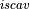
=X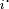
F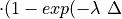
t)). In this formula, X is the species mass (in kg) and X scavenged in time step t , F is the
fraction of the grid box from which tracer is being removed, and
t , F is the
fraction of the grid box from which tracer is being removed, and
 is the loss rate. In-cloud scavenging is proportional to
the amount of condensate converted to precipitation, and the loss rate
depends on the amount of cloud water, the rate of precipitation
formation, and the rate of tracer uptake by the liquid phase.
Below-cloud scavenging is proportional to the precipitation flux in each
layer and the loss rate depends on the precipitation rate and either the
rate of tracer uptake by the liquid phase (for accretion processes), the
mass-transfer rate (for highly soluble gases and small aerosols), or the
collision rate (for larger aerosols).
is the loss rate. In-cloud scavenging is proportional to
the amount of condensate converted to precipitation, and the loss rate
depends on the amount of cloud water, the rate of precipitation
formation, and the rate of tracer uptake by the liquid phase.
Below-cloud scavenging is proportional to the precipitation flux in each
layer and the loss rate depends on the precipitation rate and either the
rate of tracer uptake by the liquid phase (for accretion processes), the
mass-transfer rate (for highly soluble gases and small aerosols), or the
collision rate (for larger aerosols).
In CAM-chem two separate parameterizations are available: (???) from MOZART-2 and (???). The distinguishing features of the Neu and Prather scheme are related to three aspects of the parameterization: 1) the partitioning between in-cloud and below cloud scavenging, 2) the treatment of soluble gas uptake by ice and 3) the Neu and Prather scheme uniquely accounts for the spatial distribution of clouds in a column and the overlap of condensate and precipitation. Given a cloud fraction and precipitation rate in each layer, the scheme determines the fraction of the gridbox exposed to precipitation from above and that exposed to new precipitation formation under the assumption of maximum overlap of the precipitating fraction. Each model level is partitioned into as many as four sections, each with a gridbox fraction, precipitation rate, and precipitation diameter: 1) Cloudy with precipitation falling through from above; 2) Cloudy with no precipitation falling through from above; 3) Clear sky with precipitation falling through from above; 4) Clear sky with no precipitation falling from above. Any new precipitation formation is spread evenly between the cloudy fractions (1 and 2). In region 3, we assume a constant rate of evaporation that reduces both the precipitation area and amount so that the rain rate remains constant. Between levels, we average the properties of the precipitation and retain only two categories, precipitation falling into cloud and precipitation falling into ambient air, at the top boundary of each level. If the precipitation rate drops to zero, we assume full evaporation and random overlap with any precipitating levels below. Our partitioning of each level and overlap assumptions are in many ways similar to those used for the moist physics in the ECMWF model (???).
The transfer of soluble gases into liquid condensate is calculated using
Henry’s Law, assuming equilibrium between the gas and liquid phase.
Nucleation scavenging by ice, however, is treated as a burial process in
which trace gas species deposit on the surface along with water vapor
and are buried as the ice crystal grows. (???) have found that the
burial model successfully reproduces the molar ratio of HNO to HO on ice crystals as a function of
temperature for a large number of aircraft campaigns spanning a wide
variety of meteorological conditions. We use the empirical relationship
between the HNO HO molar ratio and
temperature given by (???) to determine in-cloud scavenging during
ice particle formation, which is applied to nitric acid only.
Below-cloud scavenging by ice is calculated using a rough representation
of the riming process modeled as a collision-limited first order loss
process. (???) provide a full description of the scavenging
algorithm.
On the other hand, the Horowitz approach uses the rain generation diagnostics from the large-scale and convection precipitation parameterizations in CAM; equilibrium between gas-phase and liquid phase is then assumed based on the effective Henry’s law.
6.3. Photolytic Approach (Neutral Species)¶
The calculation of the photolysis coefficients is divided into two
regions: (1) 120 nm to 200 nm (33 wavelength intervals); (2) 200 nm to
750 nm (67 wavelength intervals). The total photolytic rate constant (J)
for each absorbing species is derived during model execution by
integrating the product of the wavelength dependent exo-atmospheric flux
(F:math:_{exo}); the atmospheric transmission function (or normalized
actinic flux) (N:math:_A), which is unity at the top of atmosphere in
most wavelength regions; the molecular absorption cross-section
( ); and the quantum yield (
); and the quantum yield ( ). The
exo-atmospheric flux over these wavelength intervals can be specified
from observations and varied over the 11-year solar sunspot cycle (see
section [sec:shortwave]).
). The
exo-atmospheric flux over these wavelength intervals can be specified
from observations and varied over the 11-year solar sunspot cycle (see
section [sec:shortwave]).
The wavelength-dependent transmission function is derived as a function
of the model abundance of ozone and molecular oxygen. For wavelengths
greater than 200 nm a normalized flux lookup table (LUT) approach is
used, based on the 4-stream version of the Stratosphere, Troposphere,
Ultraviolet (STUV) radiative transfer model (S. Madronich, personal
communication), (???). The transmission function is interpolated
from the LUT as a function of altitude, column ozone, surface albedo,
and zenith angle. The temperature and pressure dependences of the
molecular cross sections and quantum yields for each photolytic process
are also represented by a LUT in this wavelength region. At wavelengths
less than 200 nm, the wavelength-dependent cross section and quantum
yields for each species are specified and the transmission function is
calculated explicitly for each wavelength interval. There are two
exceptions to this approach. In the case of J(NO) and J(O ),
detailed photolysis parameterizations are included inline. In the
Schumann-Runge Band region (SRBs), the parameterization of NO photolysis
in the
),
detailed photolysis parameterizations are included inline. In the
Schumann-Runge Band region (SRBs), the parameterization of NO photolysis
in the  -bands is based on (???). This parameterization
includes the effect of self-absorption and subsequent attenuation of
atmospheric transmission by the model-derived NO concentration. For
J(O), the SRB and Lyman-alpha parameterizations are based on
(???) and (???), respectively.
-bands is based on (???). This parameterization
includes the effect of self-absorption and subsequent attenuation of
atmospheric transmission by the model-derived NO concentration. For
J(O), the SRB and Lyman-alpha parameterizations are based on
(???) and (???), respectively.
While the lookup table provides explicit quantum yields and cross-sections for a large number of photolysis rate determinations, additional ones are available by scaling of any of the explicitly defined rates. This process is available in the definition of the chemical preprocessor input files (see (??? Table 3) for a complete list of the photolysis rates available). The impact of clouds on photolysis rates is parameterized following (???). However, because we use a lookup table approach, the impact of aerosols (tropospheric or stratospheric) on photolysis rates cannot be represented.
As an extension of MOZART-4 and to provide the ability to seamlessly perform tropospheric and stratospheric chemistry simulations, the calculation of photolysis rates for wavelengths shorter than 200 nm is included; this was shown to be important for ozone chemistry in the tropical upper troposphere (???). In addition, because the standard configuration of CAM only extends into the lower stratosphere (model top is usually around 40 km), an additional layer of ozone and oxygen above the model top is included to provide a very accurate representation of photolysis rates in the upper portion of the model as compared to the equivalent calculation using a fully-resolved stratospheric distribution.
In addition, tropospheric photolysis rates can be computed interactively. Users interested in using this capability have to contact the Chemistry-CLimate Working Group Liaison as this is an unsupported option.
6.4. Numerical Solution Approach¶
Chemical and photochemical processes are expressed by a system of time-dependent ordinary differential equations at each point in the spatial grid, of the following form:
(1)¶
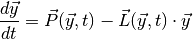

where  is the vector of all solution variables (chemical
species),
is the vector of all solution variables (chemical
species),  is the number of variables in the system, and
is the number of variables in the system, and
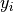
represents the variable.
variable. 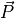
and represent the production and loss rates, which are, in
general, non-linear functions of the . This system of
equations is solved via two algorithms: an explicit forward Euler
method:
represent the production and loss rates, which are, in
general, non-linear functions of the . This system of
equations is solved via two algorithms: an explicit forward Euler
method:
(2)¶
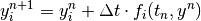
in the case of species with long lifetimes and weak forcing terms
(e.g., NO), and a more robust implicit backward Euler
method:
(3)¶
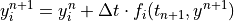
for species that comprise a``stiff system” with short lifetimes and
strong forcings (e.g., OH). Here  represents the time step
index. Each method is first order accurate in time and conservative. The
overall chemistry time step,
represents the time step
index. Each method is first order accurate in time and conservative. The
overall chemistry time step,
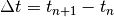
, is fixed at 30 minutes. Preprocessing software requires the user to assign each solution variable, , to one of the solution schemes. The discrete analogue for methods (2) and (3) above results in two systems of algebraic equations at each grid point. The solution to these algebraic systems for equation (2) is straightforward (i.e., explicit). The algebraic system from the implicit method (3) is quadratically non-linear. This system can be written as:(4)¶
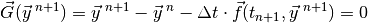
Here is an -valued, non-linear vector function,
where equals the number of species solved via the implicit
method. The solution to equation (4) is solved with a Newton-
Raphson iteration approach as shown below:
(5)¶
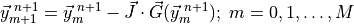
Where  is the iteration index and has a maximum value of ten.
The elements of the Jacobian matrix
is the iteration index and has a maximum value of ten.
The elements of the Jacobian matrix  are given by:
are given by:
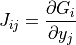
The iteration and solution of equation (5) is carried out with
a sparse matrix solution algorithm. This process is terminated when the
given solution variable changes in a relative measure by less than a
prescribed fractional amount. This relative error criterion is set on a
species by species basis, and is typically 0.001; however, for some
species (e.g., O ), where a tighter error criterion is
desired, it is set to 0.0001. If the iteration maximum is reached (for
any species) before the error criterion is met, the time step is cut in
half and the solution to equation (5) is iterated again. The
time step can be reduced five times before the solution is accepted.
This approach is based on the work of [SPDIC96] and [SVvL+97]; see also
[BOT99].
), where a tighter error criterion is
desired, it is set to 0.0001. If the iteration maximum is reached (for
any species) before the error criterion is met, the time step is cut in
half and the solution to equation (5) is iterated again. The
time step can be reduced five times before the solution is accepted.
This approach is based on the work of [SPDIC96] and [SVvL+97]; see also
[BOT99].
6.5. Superfast Chemistry¶
6.5.1. Chemical mechanism¶
The super-fast mechanism was developed for long coupled
chemistry-climate simulations, and is based on an updated version of the
full non-methane hydrocarbon effects (NMHC) chemical mechanism for the
troposphere and stratosphere used in the Lawrence Livermore National
Laboratory off-line 3D global chemistry-transport model (IMPACT)
citep[]rotman:04. The super-fast mechanism includes 15 photochemically
active trace species (O:math:_{3}, OH, HO,
HO, NO, NO,
HNO, CO, CHO,
CHO, CHOOH, DMS,
SO, SO, and
CH) that allow us to calculate the major
terms by which global change operates in tropospheric ozone and sulfate
photochemistry. The families selected are Ox, HOx, NOy, the
CH oxidation suite plus isoprene (to capture the main NMHC
effects), and a group of sulfur species to simulate natural and
anthropogenic sources leading to sulfate aerosol.
Sulfate aerosols is handled following [TMW+05b].
In this scheme, CH4 concentrations are read in from a file and uses CAM3.5 simulations [LamarqueBondEyring+10].
The super-fast mechanism was validated by comparing the super-fast and full mechanisms in side-by-side simulations.
6.5.2. Emissions for CAM4 superfast chemistry¶
O & x & x & & x & &6.5.3. LINOZ¶
Linoz is linearized ozone chemistry for stratospheric modeling [MOH+00]. It calculates the net production of ozone (i.e., production minus loss) as a function of only three independent variables: local ozone concentration, temperature, and overhead column ozone). A zonal mean climatology for these three variables as well as the other key chemical variables such a total odd-nitrogen methane abundance is developed from satellite and other in situ observations. A relatively complete photochemical box model [Pra92] is used to integrate the radicals to a steady state balance and then compute the net production of ozone. Small perturbations about the chemical climatology are used to calculate the coefficients of the first-order Taylor series expansion of the net production in terms of local ozone mixing ratio (f), temperature (T), and overhead column ozone (c).

The photochemical tendency for the climatology is denoted by
 , and the climatology values for the independent
variables are denoted by
, and the climatology values for the independent
variables are denoted by
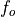
, , and
, and  ,
respectively. Including these four climatology values and the three
partial derivatives, Linoz is defined by seven tables. Each table is
specified by 216 atmospheric profiles: 12 months by 18 latitudes
(85:math:^oS to 85N). For each profile, quantities are
evaluated at every 2 km in pressure altitude from
,
respectively. Including these four climatology values and the three
partial derivatives, Linoz is defined by seven tables. Each table is
specified by 216 atmospheric profiles: 12 months by 18 latitudes
(85:math:^oS to 85N). For each profile, quantities are
evaluated at every 2 km in pressure altitude from 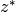
= 10 to 58 km ( = 16 km log (1000/p)). These tables (calculated for each decade, 1850-2000 to take into account changes in CH4 and N2O) are automatically remapped onto the CAM-chem grid with the mean vertical properties for each CAM-chem level calculated as the mass-weighted average of the interpolated Linoz profiles. Equation (1) is implemented for the chemical tendency of ozone in CAM-chem.6.5.4. Parameterized PSC ozone loss¶
In the superfast chemistry, we incorporate the PSCs parameterization
scheme of [CLBRG90] when the temperature falls below
195 K and the sun is above the horizon at stratospheric altitudes.
The O loss scales as the squared stratospheric chlorine
loading (normalized by the 1980 level threshold). In this formulation
PSC activation invokes a rapid e-fold of O based on a
photochemical model, but only when t he temperature stays below the
PSC threshold. The stratospheric chlorine loading (1850-2005) is input
in the model using equivalent effective stratospheric chlorine (EESC)
([NDWN07]) table based on observed mixing ratios at the
surface.
This can be used instead of the more explicit representation available from WACCM in the strat-trop configuration.
6.6. Physical Parameterizations¶
In WACCM4.0, we extend the physical parameterizations used in CAM4 by adding constituent separation velocities to the molecular (vertical) diffusion and modifying the gravity spectrum parameterization. Both of these parameterizations are present, but not used, in CAM4. In addition, we replace the CAM4 parameterizations for both solar and longwave radiation above
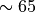
km, and add neutral and ion chemistry models.6.6.1. Domain and Resolution¶
WACCM4.0 has 66 vertical levels from the ground to
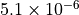
hPa, as in the previous WACCM versions. As in CAM4, the vertical coordinate is purely isobaric above 100 hPa, but is terrain following below that level. At any model grid point, the local pressure p is determined by(6)¶
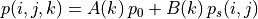
where  and
and  are functions of model level,
are functions of model level,  ,
only;
,
only;
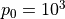
hPa is a reference surface pressure; and is the predicted surface pressure, which is a function of
model longitude and latitude (indexed by
is the predicted surface pressure, which is a function of
model longitude and latitude (indexed by  and
and  ). The
finite volume dynamical core uses locally material surfaces for its
internal vertical coordinate and remaps (conservatively interpolates) to
the hybrid surfaces after each time step.
). The
finite volume dynamical core uses locally material surfaces for its
internal vertical coordinate and remaps (conservatively interpolates) to
the hybrid surfaces after each time step.
Within the physical and chemical parameterizations, a local pressure coordinate is used, as described by (6) . However, in the remainder of this note we refer to the vertical coordinate in terms of log-pressure altitude
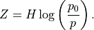
The value adopted for the scale height,
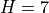
km, is representative of the real atmosphere up to km, above
that altitude temperature increases very rapidly and the typical scale
height becomes correspondingly larger. It is important to distinguish
km, above
that altitude temperature increases very rapidly and the typical scale
height becomes correspondingly larger. It is important to distinguish
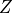
from the geopotential height , which is obtained
from integration of the hydrostatic equation.
, which is obtained
from integration of the hydrostatic equation.
In terms of log-pressure altitude, the model top level is found at
 km (
km (
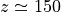
km). It should be noted that the solution in the top 15-20 km of the model is undoubtedly affected by the presence of the top boundary. However, it should not be thought of as a sponge layer, since molecular diffusion is a real process and is the primary damping on upward propagating waves near the model top. Indeed, this was a major consideration in moving the model top well above the turbopause. Considerable effort has been expended in formulating the upper boundary conditions to obtain realistic solutions near the model top and all of the important physical and chemical processes for that region have been included.The standard vertical resolution is variable; it is 3.5 km above about 65 km, 1.75 km around the stratopause (50 km), 1.1-1.4 km in the lower stratosphere (below 30 km), and 1.1 km in the troposphere (except near the ground where much higher vertical resolution is used in the planetary boundary layer).
Two standard horizontal resolutions are supported in WACCM4.0: the
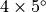
(latitude longitude) low resolution version has 72 longitude and 46
latitude points; the
longitude) low resolution version has 72 longitude and 46
latitude points; the 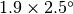
medium resolution version has 96 longitude and 144 latitude points. A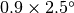
high resolution version of has had limited testing, and is not yet supported, due to computational cost constraints. The version has been used extensively for MLT studies, where it gives very similar results to the version. However, caution should be exercised in using results below the stratopause, since the meridional resolution may not be sufficient to represent adequately the dynamics of either the polar vortex or synoptic and planetary waves.At all resolutions, the time step is 1800 s for the physical parameterizations. Within the finite volume dynamical core, this time step is subdivided as necessary for computational stability.
6.6.2. Molecular Diffusion and Constituent Separation¶
The vertical diffusion parameterization in CAM4 provides the interface to the turbulence parameterization, computes the molecular diffusivities (if necessary) and finally computes the tendencies of the input variables. The diffusion equations are actually solved implicitly, so the tendencies are computed from the difference between the final and initial profiles. In WACCM4.0, we extend this parameterization to include the terms required for the gravitational separation of constituents of differing molecular weights. The formulation for molecular diffusion follows (???)
A general vertical diffusion parameterization can be written in terms of the divergence of diffusive fluxes:
(7)¶
(8)¶
where
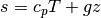
is the dry static energy, is the
geopotential height above the local surface (does not include the
surface elevation) and  is the heating rate due to the
dissipation of resolved kinetic energy in the diffusion process. The
diffusive fluxes are defined as:
is the heating rate due to the
dissipation of resolved kinetic energy in the diffusion process. The
diffusive fluxes are defined as:
(9)¶
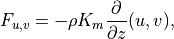
(10)¶
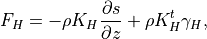
(11)¶
The viscosity  and diffusivities
and diffusivities
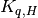
are the sums of: turbulent components , which dominate below
the mesopause; and molecular components
, which dominate below
the mesopause; and molecular components 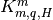
, which dominate above 120 km. The non-local transport terms are given by the ABL parameterization and and the
kinetic energy dissipation is
are given by the ABL parameterization and and the
kinetic energy dissipation is
(12)¶
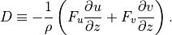
The treatment of the turbulent diffusivities , the
energy dissipation and the nonlocal transport terms
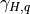
is described in the Technical Description and will be omitted here.6.6.2.1. Molecular viscosity and diffusivity¶
The empirical formula for the molecular kinematic viscosity is
(13)¶
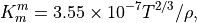
and the molecular diffusivity for heat is
(14)¶
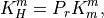
where
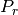
is the Prandtl number and we assume in
WACCM4.0. The constituent diffusivities are
in
WACCM4.0. The constituent diffusivities are
(15)¶
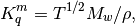
where
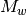
is the molecular weight.6.6.2.2. Diffusive separation velocities¶
As the mean free path increases, constituents of different molecular weights begin to separate in the vertical. In WACCM4.0, this separation is represented by a separation velocity for each constituent with respect mean air. Since extends only into the lower thermosphere, we avoid the full complexity of the separation problem and represent mean air by the usual dry air mixture used in the lower atmosphere (
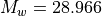
) ([BK73]).6.6.2.3. Discretization of the vertical diffusion equations¶
In CAM4, as in previous version of the CCM, (7) [eq:fluxz2]) are cast in pressure coordinates, using
(16)¶
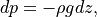
and discretized in a time-split form using an Euler backward time step.
Before describing the numerical solution of the diffusion equations, we
define a compact notation for the discrete equations. For an arbitrary
variable  , let a subscript denote a discrete time level,
with current step
, let a subscript denote a discrete time level,
with current step  and next step
and next step
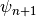
. The model has layers in the vertical, with indexes running from
top to bottom. Let
layers in the vertical, with indexes running from
top to bottom. Let  denote a layer midpoint quantity and
let
denote a layer midpoint quantity and
let  denote the value at the interface above (below)
. The relevant quantities, used below, are then:
denote the value at the interface above (below)
. The relevant quantities, used below, are then:
![\begin{aligned}
\psi^{k+}&=&(\psi^{k}+\psi^{k+1})/2,\quad k\in (1,2,3,...,L-1) \nonumber \\
\psi^{k-}&=&(\psi^{k-1}+\psi^{k})/2,\quad k\in (2,3,4...,L) \nonumber \\
\delta^{k}\psi &=& \psi^{k+}-\psi^{k-}, \nonumber \\
\delta^{k+}\psi &=& \psi^{k+1}-\psi^{k}, \nonumber \\
\delta^{k-}\psi &=& \psi^{k}-\psi^{k-1}, \nonumber \\
\psi_{n+}&=&(\psi_{n}+\psi_{n+1})/2, \nonumber \\
\delta_n\psi &=& \psi_{n+1}-\psi_{n}, \nonumber \\
\delta t &=& t_{n+1}-t_{n}, \nonumber \\
\Delta^{k,l} &=& 1,\ k=l, \nonumber \\
&=& 0,\ k\neq l. \nonumber\end{aligned}](../_images/math/b584b2c47bfaaac2a032c1d5604b2a2584e6ecbd.png)
Like the continuous equations, the discrete equations are required to conserve momentum, total energy and constituents. Neglecting the nonlocal transport terms, the discrete forms of (7) [eq:contz3]) are:
(17)¶
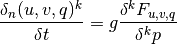
(18)¶
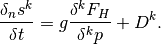
For interior interfaces,  ,
,
(19)¶
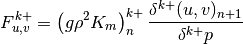
(20)¶
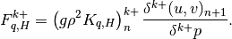
Surface fluxes
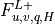
are provided explicitly at time by separate surface models for land, ocean, and sea ice while
the top boundary fluxes are usually  . The
turbulent diffusion coefficients
. The
turbulent diffusion coefficients 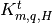
and non-local transport terms are calculated for time
by the turbulence model (identical to CAM4). The molecular diffusion
coefficients, given by (13) [Kmq]) are also evaluated at time
.
6.6.2.4. Solution of the vertical diffusion equations¶
Neglecting the discretization of , and
, a series of time-split operators is defined by
(17) [eq:vdfqs]). Once the diffusivities (
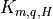
) and the non-local transport terms () have been
determined, the solution of (17) [eq:vdfqs]), proceeds in several
steps.
- update the bottom level values of
 ,
,  ,
,  and
and
 using the surface fluxes;
using the surface fluxes; - invert (17) and (19) for
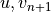
; - compute and use to update the profile;
- invert (17) [eq:vds]) and (20) for
 and
and

Note that since all parameterizations in CAM4 return tendencies rather modified profiles, the actual quantities returned by the vertical diffusion are
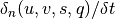
.Equations (17) [eq:vdfqs]) constitute a set of four tridiagonal systems of the form
(21)¶
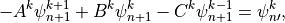
where  indicates , , ,
or after updating from time values with the nonlocal
and boundary fluxes. The super-diagonal (), diagonal
() and sub-diagonal () elements of (21)
are:
indicates , , ,
or after updating from time values with the nonlocal
and boundary fluxes. The super-diagonal (), diagonal
() and sub-diagonal () elements of (21)
are:
The solution of (21) has the form
(22)¶
or,
(23)¶
(24)¶
Comparing (22) and (24) , we find
(25)¶
(26)¶
The terms and  can be determined upward from
can be determined upward from
 , using the boundary conditions
, using the boundary conditions
Finally, (24) can be solved downward for , using the boundary condition
CCM1-3 used the same solution method, but with the order of the solution
reversed, which merely requires writing (23) for
instead of . The order
used here is particularly convenient because the turbulent diffusivities
for heat and all constituents are the same but their molecular
diffusivities are not. Since the terms in (25) and (26)
are determined from the bottom upward, it is only necessary to
recalculate , , and  for each constituent within the region where molecular
diffusion is important.
for each constituent within the region where molecular
diffusion is important.
6.6.3. Gravity Wave Drag¶
Vertically propagating gravity waves can be excited in the atmosphere where stably stratified air flows over an irregular lower boundary and by internal heating and shear. These waves are capable of transporting significant quantities of horizontal momentum between their source regions and regions where they are absorbed or dissipated. Previous GCM results have shown that the large-scale momentum sinks resulting from breaking gravity waves play an important role in determining the structure of the large-scale flow. CAM4 incorporates a parameterization for a spectrum of vertically propagating internal gravity waves based on the work of [Lin81], [Hol82], [GS85] and [McF87]. The parameterization solves separately for a general spectrum of monochromatic waves and for a single stationary wave generated by flow over orography, following [McF87]. The spectrum is omitted in the standard tropospheric version of CAM4, as in previous versions of the CCM. Here we describe the modified version of the gravity wave spectrum parameterization used in WACCM4.0.
6.6.3.1. Adiabatic inviscid formulation¶
Following (???), the continuous equations for the gravity wave parameterization are obtained from the two-dimensional hydrostatic momentum, continuity and thermodynamic equations in a vertical plane:
(27)¶
(28)¶
(29)¶
Where is the local Brunt-Väisällä frequency, and  is
the vertical velocity in log pressure height () coordinates.
Eqs. (27) –(29) are linearized
about a large scale background wind , with
perturbations
is
the vertical velocity in log pressure height () coordinates.
Eqs. (27) –(29) are linearized
about a large scale background wind , with
perturbations  , and combined to obtain:
, and combined to obtain:
(30)¶
Solutions to (30) are assumed to be of the form:
(31)¶
where  is the scale height, is the horizontal
wavenumber and
is the scale height, is the horizontal
wavenumber and  is the phase speed of the wave. Substituting
(31) into (30) , one obtains:
is the phase speed of the wave. Substituting
(31) into (30) , one obtains:
(32)¶
Neglecting compared to
 in eq:gw_what, one
obtains the final form of the two dimensional wave equation:
in eq:gw_what, one
obtains the final form of the two dimensional wave equation:
(33)¶
with the coefficient defined as:
(34)¶
The WKB solution of (33) is:
(35)¶
and the full solution, from (31) , is:
(36)¶
The constant is determined from the wave amplitude at the
source ( ), The Reynolds stress associated with
eq:eq:gw_final is:
), The Reynolds stress associated with
eq:eq:gw_final is:
(37)¶
and is conserved, while the momentum flux
 grows exponentially with altitude as
grows exponentially with altitude as  , per
(36). We note that the vertical flux of wave energy
is ((???)), where is
the vertical group velocity, so that deposition of wave momentum into
the mean flow will be accompanied by a transfer of energy to the
background state.
, per
(36). We note that the vertical flux of wave energy
is ((???)), where is
the vertical group velocity, so that deposition of wave momentum into
the mean flow will be accompanied by a transfer of energy to the
background state.
6.6.3.2. Saturation condition¶
The wave amplitude in (36) grows as
until the wave becomes unstable to convective overturning,
Kelvin-Helmholtz instability, or other nonlinear processes. At that
point, the wave amplitude is assumed to be limited to the amplitude that
would trigger the instability and the wave is “saturated”. The
saturation condition used in CAM4 is from (???), based on a maximum
Froude number ( ), or streamline slope.
), or streamline slope.
(38)¶
where is the saturation stress and . In
,  and is omitted hereafter. Following (???), within
a saturated region the momentum tendency can be determined analytically
from the divergence of :
and is omitted hereafter. Following (???), within
a saturated region the momentum tendency can be determined analytically
from the divergence of :
(39)¶
where  is an “efficiency” factor. For a background wave
spectrum, represents the temporal and spatial intermittency in
the wave sources. The analytic solution (39) is not
used in WACCM4.0; it is shown here to illustrate how the acceleration due to
breaking gravity waves depends on the intrinsic phase speed. In the
model, the stress profile is computed at interfaces and differenced to
get the specific force at layer midpoints.
is an “efficiency” factor. For a background wave
spectrum, represents the temporal and spatial intermittency in
the wave sources. The analytic solution (39) is not
used in WACCM4.0; it is shown here to illustrate how the acceleration due to
breaking gravity waves depends on the intrinsic phase speed. In the
model, the stress profile is computed at interfaces and differenced to
get the specific force at layer midpoints.
6.6.3.3. Diffusive damping¶
In addition to breaking as a result of instability, vertically
propagating waves can also be damped by molecular diffusion (both
thermal and momentum) or by radiative cooling. Because the intrinsic
periods of mesoscale gravity waves are short compared to IR relaxation
time scales throughout the atmosphere, we ignore radiative damping. We
take into account the molecular viscosity,  , such that the
stress profile is given by:
, such that the
stress profile is given by:
(40)¶
where  denotes the top of the region, below , not
affected by thermal dissipation or molecular diffusion. The imaginary
part of the local vertical wavenumber, is then:
denotes the top of the region, below , not
affected by thermal dissipation or molecular diffusion. The imaginary
part of the local vertical wavenumber, is then:
(41)¶
In WACCM4.0, ((40) – (41)) are only used
within the domain where molecular diffusion is important (above
km). At lower altitudes, molecular diffusion is
negligible,  , and
, and  is
conserved outside of saturation regions.
is
conserved outside of saturation regions.
6.6.3.4. Transport due to dissipating waves¶
When the wave is dissipated, either through saturation or diffusive
damping, there is a transfer of wave momentum and energy to the
background state. In addition, a phase shift is introduced between the
wave’s vertical velocity field and its temperature and constituent
perturbations so that fluxes of heat and constituents are nonzero within
the dissipation region. The nature of the phase shift and the resulting
transport depends on the dissipation mechanism; in WACCM4.0, we assume that the
dissipation can be represented by a linear damping on the potential
temperature and constituent perturbations. For potential temperature,
 , this leads to:
, this leads to:
(42)¶
where is the dissipation rate implied by wave breaking,
which depends on the wave’s group velocity, (see [Gar01]).
(43)¶
Substitution of (43) into (42) then yields the eddy heat flux:
(44)¶
Similar expressions can be derived for the flux of chemical constituents, with mixing ratio substituted in place of potential temperature in ([eq:gw:sub:kzz]). We note that these wave fluxes are always downgradient and that, for convenience of solution, they may be represented as vertical diffusion, with coefficient equal to the term in brackets in (44) , but they do not represent turbulent diffusive fluxes but rather eddy fluxes. Any additional turbulent fluxes due to wave breaking are ignored. To take into account the effect of localization of turbulence (e.g., [FD85][McI89]) (44) is multiplied times an inverse Prandtl number, ; in WACCM4.0 we use .
6.6.3.5. Heating due to wave dissipation¶
The vertical flux of wave energy density, , is related to the stress according to:

where is the vertical group velocity [Andrews et al.,
1987]. Therefore, the stress divergence
 that accompanies wave breaking
implies a loss of wave energy. The rate of dissipation of wave energy
density is:
that accompanies wave breaking
implies a loss of wave energy. The rate of dissipation of wave energy
density is:

For a saturated wave, the stress divergence is given by (39) , so that:
(45)¶
This energy loss by the wave represents a heat source for the background state, as does the change in the background kinetic energy density implied by wave drag on the background flow:
(46)¶
which follows directly from (39) . The background
heating rate, in K sec , is then:
, is then:
Using , this heating rate may be expressed as:
(47)¶
where  is the specific heat at constant pressure. In WACCM4.0,
is the specific heat at constant pressure. In WACCM4.0,
 is calculated for each component of the gravity wave
spectrum using the first equality in (47) , i.e., the
product of the phase velocity times the stress divergence.
is calculated for each component of the gravity wave
spectrum using the first equality in (47) , i.e., the
product of the phase velocity times the stress divergence.
6.6.3.6. Orographic source function¶
For orographically generated waves, the source is taken from (???):
(48)¶
where is the streamline displacement at the source level,
and  ,
,  , and are also
defined at the source level. For orographic waves, the subgrid-scale
standard deviation of the orography is used to estimate
the average mountain height, determining the typical streamline
displacement. An upper bound is used on the displacement (equivalent to
defining a “separation streamline”) which corresponds to requiring that
the wave not be supersaturated at the source level:
, and are also
defined at the source level. For orographic waves, the subgrid-scale
standard deviation of the orography is used to estimate
the average mountain height, determining the typical streamline
displacement. An upper bound is used on the displacement (equivalent to
defining a “separation streamline”) which corresponds to requiring that
the wave not be supersaturated at the source level:
(49)¶
The source level quantities , , and
are defined by vertical averages over the source
region, taken to be  , the depth to which the average
mountain penetrates into the domain:
, the depth to which the average
mountain penetrates into the domain:
(50)¶
The source level wind vector  determines the
orientation of the coordinate system in
(27) –(29) and the magnitude of the
source wind .
determines the
orientation of the coordinate system in
(27) –(29) and the magnitude of the
source wind .
6.6.3.7. Non-orographic source functions¶
The source spectrum for non-orographic gravity waves is no longer assumed to be a specified function of location and season, as was the case with the earlier version of the model described by (???). Instead, gravity waves are launched according to trigger functions that depend on the atmospheric state computed in WACCM4 at any given time and location, as discussed by (???). Two trigger functions are used: convective heat release (which is a calculated model field) and a “frontogenesis function”, (???), which diagnoses regions of strong wind field deformation and temperature gradient using the horizontal wind components and potential temperature field calculated by the model.
In the case of convective excitation, the method of (???) is used to determine a phase speed spectrum based upon the properties of the convective heating field. A spectrum is launched whenever the deep convection parameterization in WACCM4 is active, and the vertical profile of the convective heating, together with the mean wind field in the heating region, are used to determine the phase speed spectrum of the momentum flux. Convectively generated waves are launched at the top of the convective region (which varies according to the depth of the convective heating calculated in the model).
Waves excited by frontal systems are launched whenever the frontogenesis trigger function exceeds a critical value (see (???)). The waves are launched from a constant source level, which is specified to be 600 mb. The momentum flux phase speed spectrum is given by a Gaussian function in phase speed:
(51)¶![\tau_s (c) = \tau_b
\exp\left[-\left( \frac{c - V_s}{c_w} \right)^2\right],](../_images/math/9323fad971e3e3af29b7d57f8c7440496bf3e347.png)
centered on the source wind,  , with width
, with width
 m/s. A range of phase speeds with specified width and
resolution is used:
m/s. A range of phase speeds with specified width and
resolution is used:
(52)¶![c \in V_s + [\pm d_c, \pm 2d_c, ... \pm c_{max}]\, ,](../_images/math/027a0eda26a9c3d79c101eae532e256404f7ca5e.png)
with m s and  m
s, giving 64 phase speeds. Note that
m
s, giving 64 phase speeds. Note that  is
retained in the code for simplicity, but has a critical level at the
source and, therefore, . Note also that
is
retained in the code for simplicity, but has a critical level at the
source and, therefore, . Note also that
 is a tunable parameter; in practice this is set such that
the height of the polar mesopause, which is very sensitive to gravity
wave driving, is consistent with observations. In WACCM4,
= 1.5 x 10
is a tunable parameter; in practice this is set such that
the height of the polar mesopause, which is very sensitive to gravity
wave driving, is consistent with observations. In WACCM4,
= 1.5 x 10 Pa.
Pa.
Above the source region, the saturation condition is enforced separately for each phase speed, , in the momentum flux spectrum:
(53)¶
6.6.3.8. Numerical approximations¶
The gravity wave drag parameterization is applied immediately after the nonlinear vertical diffusion. The interface Brunt-Väisällä frequency is
(54)¶
Where the interface density is:
The midpoint Brunt-Väisällä frequencies are .
The level for the orographic source is an interface determined from an estimate of the vertical penetration of the subgrid mountains within the grid box. The subgrid scale standard deviation of the orography, , gives the variation of the mountains about the mean elevation, which defines the Earth’s surface in the model. Therefore the source level is defined as the interface, , for which , where the interface heights are defined from the midpoint heights by .
The source level wind vector, density and Brunt-Väisällä frequency are determined by vertical integration over the region from the surface to interface :
(55)¶
The source level background wind is , the unit vector for the source wind is
(56)¶
and the projection of the midpoint winds onto the source wind is
(57)¶
Assuming that m s and
m, then the orographic source term,
is given by (48) and
(49) , with =1 and
m. Although the code contains a provision for a linear
stress profile within a “low level deposition region”, this part of the
code is not used in the standard model.
The stress profiles are determined by scanning up from the bottom of the
model to the top. The stress at the source level is determined by
(48) . The saturation stress, at
each interface is determined by (53) , and
if a critical level is passed. A critical level is
contained within a layer if
 .
.
Within the molecular diffusion domain, the imaginary part of the vertical wavenumber is given by (41) . The interface stress is then determined from the stress on the interface below by:
(58)¶
Below the molecular diffusion domain, the exponential term in (58) is omitted.
Once the complete stress profile has been obtained, the forcing of the background wind is determined by differentiating the profile during a downward scan:
(59)¶
(60)¶
The first bound on the forcing comes from requiring that the forcing not be large enough to push the wind more than half way towards a critical level within a time step and takes the place of an implicit solution. This bound is present for numerical stability, it comes into play when the time step is too large for the forcing. It is not feasible to change the time step, or to write an implicit solver, so an a priori bound is used instead. The second bound is used to constrain the forcing to lie within a physically plausible range (although the value used is extremely large) and is rarely invoked.
When any of the bounds in (59) are invoked, conservation of stress is violated. In this case, stress conservation is ensured by decreasing the stress on the lower interface to match the actual stress divergence in the layer:
(61)¶
This has the effect of pushing some of the stress divergence into the layer below, a reasonable choice since the waves are propagating up from below.
Finally, the vector momentum forcing by the gravity waves is determined by projecting the background wind forcing with the unit vectors of the source wind:
(62)¶
In addition, the frictional heating implied by the momentum tendencies,
,
is added to the thermodynamic equation. This is the correct heating for
orographic () waves, but not for waves with
 , since it does not account for the wave energy flux.
This flux is accounted for in some middle and upper atmosphere versions
of CAM4, but also requires accounting for the energy flux at the source.
, since it does not account for the wave energy flux.
This flux is accounted for in some middle and upper atmosphere versions
of CAM4, but also requires accounting for the energy flux at the source.
6.6.4. Turbulent Mountain Stress¶
An important difference between WACCM4 and earlier versions is the
addition of surface stress due to unresolved orography. A numerical
model can compute explicitly only surface stresses due to resolved
orography. At the standard 1.9 x 2.5
(longitude x latitude) resolution used by WACCM4 only the gross outlines
of major mountain ranges are resolved. To address this problem,
unresolved orography is parameterized as turbulent surface drag, using
the concept of effective roughness length developed by (???).
Fiedler and Panofsky defined the roughness length for heterogeneous
terrain as the roughness length that homogenous terrain would have to
give the correct surface stress over a given area. The concept of
effective roughness has been used in several Numerical Weather
Prediction models (e.g., (???); (???)).
x 2.5
(longitude x latitude) resolution used by WACCM4 only the gross outlines
of major mountain ranges are resolved. To address this problem,
unresolved orography is parameterized as turbulent surface drag, using
the concept of effective roughness length developed by (???).
Fiedler and Panofsky defined the roughness length for heterogeneous
terrain as the roughness length that homogenous terrain would have to
give the correct surface stress over a given area. The concept of
effective roughness has been used in several Numerical Weather
Prediction models (e.g., (???); (???)).
In WACCM4 the effective roughness stress is expressed as:
(63)¶
where  is the density and
is the density and  is a turbulent drag
coefficient,
is a turbulent drag
coefficient,
is von Kármán’s constant; is the height above the
surface;  is an effective roughness length, defined in terms
of the standard deviation of unresolved orography; and is
a function of the Richardson number (see (???) for details).
is an effective roughness length, defined in terms
of the standard deviation of unresolved orography; and is
a function of the Richardson number (see (???) for details).
The stress calculated by (63) is used the model’s nonlocal PBL scheme
to evaluate the PBL height and nonlocal transport, per Eqs.
(3.10)Ð(3.12) of (???). This calculation is carried out only over
land, and only in grid cells where the height of topography above sea
level, , is nonzero.
6.6.5. QBO Forcing¶
WACCM4 has several options for forcing a quasi-biennial oscillation (QBO) by applying a momentum forcing in the tropical stratosphere. The parameterization relaxes the simulated winds to a specified wind field that is either fixed or varies with time. The parameterization can also be turned off completely. The namelist variables and input files can be selected to choose one of the following options:
- Idealized QBO East winds, used for perpetual fixed-phase of the QBO, as described by (???).
- Idealized QBO West winds, as above but for the west phase.
- Repeating idealized 28-month QBO, also described by (???).
- QBO for the years 1953-2004 based on the climatology of Giorgetta [see: http://www.pa.op.dlr.de/CCMVal/Forcings/qbo_data_ccmval/u_profile_195301-200412.html, 2004].
- QBO with a 51-year repetition, based on the 1953-2004 climatology of Giorgetta, which can be used for any calendar year, past or future.
The relaxation of the zonal wind is based on (???) and is described
in (???). The input winds are specified at the equator and the
parameterization extends latitudinally from 22 N to
22S, as a Gaussian function with a half width of
10 centered at the equator. Full vertical relaxation
extends from 86 to 4 hPa with a time constant of 10 days. One model
level below and above this altitude range, the relaxation is half as
strong and is zero for all other levels. This procedure constrains the
equatorial winds to more realistic values while allowing resolved and
parameterized waves to continue to propagate.
N to
22S, as a Gaussian function with a half width of
10 centered at the equator. Full vertical relaxation
extends from 86 to 4 hPa with a time constant of 10 days. One model
level below and above this altitude range, the relaxation is half as
strong and is zero for all other levels. This procedure constrains the
equatorial winds to more realistic values while allowing resolved and
parameterized waves to continue to propagate.
The fixed or idealized QBO winds (first 3 options) can be applied for any calendar period. The observed input (Giorgetta climatology) can be used only for the model years 1953-2004. The winds in the final option were determined from the Giorgetta climatology for 1954-2004 via filtered spectral decomposition of that climatology. This gives a set of Fourier coefficients that can be expanded for any day and year. The expanded wind fields match the climatology during the years 1954-2004.
6.6.6. Radiation¶
The radiation parameterizations in CAM4 are quite accurate up to km, but deteriorate rapidly above that altitude. Because 65 km is near a local minimum in both shortwave heating and longwave cooling, it is a particularly convenient height to merge the heating rates from parameterizations for the lower and upper atmosphere. Therefore, we retain the CAM4 parameterizations below km and use new parameterizations above.
The merged shortwave and longwave radiative heatings are determined from
(64)¶
where , and
 is the pressure scale height. The CAM4 radiation
parameterizations are used below and the MLT
parameterizations are used above
is the pressure scale height. The CAM4 radiation
parameterizations are used below and the MLT
parameterizations are used above  . For ,
. For ,  and
and
(65)¶
where is the transition width.
The merging was developed and tested separately for shortwave and
longwave radiation and the constants are slightly different. For
longwave radiation, the constants are ,
 and . For shortwave radiation, the
constants are , and .
These constants give smooth heating profiles. Note that a typical
atmospheric scale height of km places the transition zones
between 60 and 70 km.
and . For shortwave radiation, the
constants are , and .
These constants give smooth heating profiles. Note that a typical
atmospheric scale height of km places the transition zones
between 60 and 70 km.
6.6.6.1. Longwave radiation¶
WACCM4.0 retains the longwave (LW) formulation used in CAM4 (???). However,
in the MLT longwave radiation uses the parameterization of (???) for
and cooling and the parameterization of
(???) for  cooling at 5.3
cooling at 5.3  m. As noted
above, the LW heating/cooling rates produced by these parameterizations
are merged smoothly at 65 km with those produced by the standard CAM4 LW
code, as recently revised by (???). In the interactive chemistry
case all of the gases (O, , ,
m. As noted
above, the LW heating/cooling rates produced by these parameterizations
are merged smoothly at 65 km with those produced by the standard CAM4 LW
code, as recently revised by (???). In the interactive chemistry
case all of the gases (O, , ,
 , NO, and ) that are required by these
parameterizations, are predicted within WACCM4.0.
, NO, and ) that are required by these
parameterizations, are predicted within WACCM4.0.
6.6.6.2. Shortwave radiation¶
WACCM4.0 uses a combination of solar parameterizations to specify spectral
irradiances over two spectral intervals. The first spectral interval
covers soft x-ray and extreme ultraviolet irradiances (wavelengths
between 0.05 nm to Lyman- (121.6 nm)) and is calculated
using the parameterization of (???). The parameterizations take as
input the 10.7 cm solar radio flux () and its 81-day
average (
(121.6 nm)) and is calculated
using the parameterization of (???). The parameterizations take as
input the 10.7 cm solar radio flux () and its 81-day
average ( ). Daily values of are obtained
from NOAA’s Space Environment Center (www.sec.noaa.gov).
). Daily values of are obtained
from NOAA’s Space Environment Center (www.sec.noaa.gov).
The irradiance of the th spectral interval is:
where  = 80.
= 80.  and are taken from
Table A1 of (???).
and are taken from
Table A1 of (???).
Fluxes for the second interval between Lyman- (121.6 nm)
and 100 m. are specified using an empirical model of the
wavelength-dependent sunspot and facular influences (???; Wang,
Lean, and Sheeley 2005). Spectral resolution is 1 nm between 121.6 nm
and 750nm, 5 nm between 750nm and 5m, 10 nm between
5m and 10m, and 50 nm between
10m and 100 m.
In the troposphere, stratosphere and lower mesosphere (z  65km)
WACCM4.0 retains the CAM4 shortwave heating (200 nm to 4.55 m)
which is calculated from the net shortwave spectral flux into each layer
(???). The solar spectrum for the CAM4 heating calculation is
divided into 19 intervals (???). The heating in these intervals must
be adjusted to match the irradiances calculated for the upper part of
the model, and those used in the photolysis calculations. This is
achieved by applying a scaling () to the solar heating in the
th CAM4 spectral interval using the spectrum from (???)
and Wang, Lean, and Sheeley (2005):
65km)
WACCM4.0 retains the CAM4 shortwave heating (200 nm to 4.55 m)
which is calculated from the net shortwave spectral flux into each layer
(???). The solar spectrum for the CAM4 heating calculation is
divided into 19 intervals (???). The heating in these intervals must
be adjusted to match the irradiances calculated for the upper part of
the model, and those used in the photolysis calculations. This is
achieved by applying a scaling () to the solar heating in the
th CAM4 spectral interval using the spectrum from (???)
and Wang, Lean, and Sheeley (2005):
where  is the spectral irradiance (W/m:math:^2/nm)
integrated over the th band, and
is the spectral irradiance (W/m:math:^2/nm)
integrated over the th band, and  is the
same integral taken over a reference spectrum calculated from annual
mean fluxes over a 3-solar-cycle period from XX to YY.
is the
same integral taken over a reference spectrum calculated from annual
mean fluxes over a 3-solar-cycle period from XX to YY.
In the MLT region, shortwave heating is the sum of the heating due to
absorption of photons and subsequent exothermic chemical reactions that
are initiated by photolysis. The majority of energy deposited by an
absorbed photon goes into breaking molecular bonds, rather than into
translational energy of the absorbing molecule (heat). Chemical heating
results when constituents react to form products of lower total chemical
potential energy. This heating can take place months after the original
photon absorption and thousands of kilometers away. Heating rates range
from 1 K/day near 75 km to 100-300 K/day near the top of the model
domain. It is clear that quenching of  is a large source
of heating throughout the MLT. Above 100 km ion reactions and reactions
involving atomic nitrogen are significant sources of heat, while below
that level O (= O + O) and HO (= H +
OH + HO) reactions are the dominant producers of chemical
heating.
is a large source
of heating throughout the MLT. Above 100 km ion reactions and reactions
involving atomic nitrogen are significant sources of heat, while below
that level O (= O + O) and HO (= H +
OH + HO) reactions are the dominant producers of chemical
heating.
Heating within the MLT from the absorption of radiation that is
directly thermalized is calculated over the wavelength range of 0.05 nm
to 350 nm. For wavelengths less than Lyman-, it is
assumed that 5% of the energy of each absorbed photon is directly
thermalized:
where  = 0.05. Here is mass density,
is the specific heat of dry air, is the number
density of the absorbing species, and
= 0.05. Here is mass density,
is the specific heat of dry air, is the number
density of the absorbing species, and  is the
photolysis/photoionization rate. The total heating is the sum of
photolysis reactions and wavelengths intervals. At
these wavelengths absorption of a photon typically leads to
photoionization, with the resulting photoelectron having sufficient
energy to ionize further molecules. Calculation of and
ionization rates from photoelectrons is calculated based on the
parameterization of (???). In a similar manner, the heating rate
within the aurora () is calculated as the product of the
total ionization rate, 35 eV per ion pair, and the same heating
efficiency of 5%.
is the
photolysis/photoionization rate. The total heating is the sum of
photolysis reactions and wavelengths intervals. At
these wavelengths absorption of a photon typically leads to
photoionization, with the resulting photoelectron having sufficient
energy to ionize further molecules. Calculation of and
ionization rates from photoelectrons is calculated based on the
parameterization of (???). In a similar manner, the heating rate
within the aurora () is calculated as the product of the
total ionization rate, 35 eV per ion pair, and the same heating
efficiency of 5%.
Between Lyman- and 350 nm the energy required to break
molecular bonds is explicitly accounted for. The heating rate is thus
defined as:
where is the bond dissociation energy.
In addition to these sources of heat, WACCM4.0 calculates heating by absorption
in the near-infrared by CO (between 1.05 to 4.3
m), which has its largest contribution near 70km and can
exceed 1 K/day (???). Heating from this process is calculated using
the parameterization of (???). Finally, the heating produced by
collisions of electrons and neutrals (Joule heating) is also calculated
using the predicted ion and electron concentrations. This is described
in section [ion:sub:drag]. Local heating rates from joule heating
can be very large in the auroral regions, reaching over
10 K/day in the upper levels of the model.
K/day in the upper levels of the model.
Airglow, radiation produced when excited atoms or molecules
spontaneously emit, is accounted for in WACCM4.0 for emissions of
O , O
, O , and vibrationally
excited OH. Airglow from the excited molecular oxygen species are
handled explicitly; radiative lifetimes for O and
O are 2.5810
, and vibrationally
excited OH. Airglow from the excited molecular oxygen species are
handled explicitly; radiative lifetimes for O and
O are 2.5810 s and 0.085 s respectively. However,
modeling of the many possible vibrational transitions of OH is
impractical in a model as large as WACCM4.0. Energy losses from the emission of
vibrationally excited OH are therefore accounted for by applying an
efficiency factor to the exothermicity of the reaction that produces
vibrationally excited OH; the reaction of hydrogen and ozone. In other
words, the reaction H + O produces ground state OH only, but
the chemical heating from the reaction has been reduced to take into
consideration that some of the chemical potential energy has been lost
in airglow. This approach is the same one used by (???) and we use
their recommended efficiency factor of 60%. Any energy lost through
airglow is assumed to be lost to space, and so represents an energy
pathway that does not generate heat.
s and 0.085 s respectively. However,
modeling of the many possible vibrational transitions of OH is
impractical in a model as large as WACCM4.0. Energy losses from the emission of
vibrationally excited OH are therefore accounted for by applying an
efficiency factor to the exothermicity of the reaction that produces
vibrationally excited OH; the reaction of hydrogen and ozone. In other
words, the reaction H + O produces ground state OH only, but
the chemical heating from the reaction has been reduced to take into
consideration that some of the chemical potential energy has been lost
in airglow. This approach is the same one used by (???) and we use
their recommended efficiency factor of 60%. Any energy lost through
airglow is assumed to be lost to space, and so represents an energy
pathway that does not generate heat.
6.6.6.3. Volcanic Heating¶
The sulfate aerosol heating is a function of a prescribed aerosol
distribution varying in space and time that has a size distribution
similar to that seen after a volcanic eruption (???). The
H SO
SO mass distribution is
calculated from the prescribed sulfate surface area density (SAD)
assuming a lognormal size distribution, number of particles per cm-3,
and distribution width (see section 3.6.2). The H2SO4 mass distribution
is then passed to the radiative transfer code (CAMRT), which in turn
calculates heating and cooling rates.
mass distribution is
calculated from the prescribed sulfate surface area density (SAD)
assuming a lognormal size distribution, number of particles per cm-3,
and distribution width (see section 3.6.2). The H2SO4 mass distribution
is then passed to the radiative transfer code (CAMRT), which in turn
calculates heating and cooling rates.
6.6.7. chemistry¶
6.6.7.1. Chemical Mechanism (Neutral Species)¶
includes a detailed neutral chemistry model for the middle atmosphere
based on the Model for Ozone and Related Chemical Tracers, Version 3
(???). The mechanism represents chemical and physical processes in
the troposphere through the lower thermosphere. The species included
within this mechanism are contained within the O,
NO, HO, ClO, and
BrO chemical families, along with CH and
its degradation products. This mechanism contains 52 neutral species,
one invariant (N:math:_2), 127 neutral gas-phase reactions, 48 neutral
photolytic reactions, and 17 heterogeneous reactions on three aerosol
types (see below). Lists of the chemical species are given in Table 1.
The first column lists the symbolic name (as used in the mechanism); the
second column lists the species atomic composition; the third column
designates which numerical solution approach is used (i.e., explicit or
implicit); the fourth column lists any deposition processes (wet or dry)
for that species; and the fifth column indicates whether the surface (or
upper) boundary condition is fixed vmr or flux, or if a species has an
in-situ flux (from lightning or aircraft emissions).
and
its degradation products. This mechanism contains 52 neutral species,
one invariant (N:math:_2), 127 neutral gas-phase reactions, 48 neutral
photolytic reactions, and 17 heterogeneous reactions on three aerosol
types (see below). Lists of the chemical species are given in Table 1.
The first column lists the symbolic name (as used in the mechanism); the
second column lists the species atomic composition; the third column
designates which numerical solution approach is used (i.e., explicit or
implicit); the fourth column lists any deposition processes (wet or dry)
for that species; and the fifth column indicates whether the surface (or
upper) boundary condition is fixed vmr or flux, or if a species has an
in-situ flux (from lightning or aircraft emissions).
The gas-phase reactions included in the middle atmosphere chemical mechanism are listed in Table 2. In most all cases the chemical rate constants are taken from JPL06-2 (???). Exceptions to this condition are described in the comment section for any given reaction.
Heterogeneous reactions on four different aerosols types are also represented in the chemical mechanism (see Table 3): 1) liquid binary sulfate (LBS); 2) Supercooled ternary solution (STS); 3) Nitric acid trihydrate (NAT); and 4) water-ice. There are 17 reactions, six reactions on liquid sulfate aerosols (LBS or STS), five reactions on solid NAT aerosols, and six reactions on solid water-ice aerosols. The rate constants for these 17 heterogeneous reactions can be divided up into two types: 1) first order; and 2) pseudo second order. For first order hydrolysis reactions (Table 3, reactions 1-3, 7-8, 11, and 12-14), the heterogeneous rate constant is derived in the following manner:

Where V = mean velocity; SAD = surface area density of LBS, STS, NAT, or
water-ice, and  = reaction probability for each reaction.
The units for this rate constant are s. Here the
HO abundance is in excess and assumed not change relative
to the other reactant trace constituents. The mean velocity is dependent
on the molecular weight of the non-HO reactant (i.e.,
NO
= reaction probability for each reaction.
The units for this rate constant are s. Here the
HO abundance is in excess and assumed not change relative
to the other reactant trace constituents. The mean velocity is dependent
on the molecular weight of the non-HO reactant (i.e.,
NO , ClONO, or BrONO).
The SAD for each aerosol type is described in section 7. The reaction
probability is dependent on both composition and temperature for sulfate
aerosol (see JPL06-2). The reaction probability is a fixed quantity for
NAT and water-ice aerosols and is listed in Table 3. Multiplying the
rate constant times the concentration gives a loss rate in units of
molecules cm sec for the reactants and is
used in the implicit solution approach. The non-hydrolysis reaction
(Table 3, reactions 4-6, 9-10, and 15-17) are second order reactions.
Here, the first order rate constant (equation 6) is divided by the HCl
concentration, giving it the typical bimolecular rate constant unit
value of cm molecule sec. This
approach assumes that all the HCl is in the aerosol particle.
, ClONO, or BrONO).
The SAD for each aerosol type is described in section 7. The reaction
probability is dependent on both composition and temperature for sulfate
aerosol (see JPL06-2). The reaction probability is a fixed quantity for
NAT and water-ice aerosols and is listed in Table 3. Multiplying the
rate constant times the concentration gives a loss rate in units of
molecules cm sec for the reactants and is
used in the implicit solution approach. The non-hydrolysis reaction
(Table 3, reactions 4-6, 9-10, and 15-17) are second order reactions.
Here, the first order rate constant (equation 6) is divided by the HCl
concentration, giving it the typical bimolecular rate constant unit
value of cm molecule sec. This
approach assumes that all the HCl is in the aerosol particle.
6.6.7.2. Stratospheric Aerosols¶
Heterogeneous processes on liquid sulfate aerosols and solid polar stratospheric clouds (Type 1a, 1b, and 2) are included following the approach of (???). This approach assumes that the condensed phase mass follows a lognormal size distribution taken from (???),
(66)¶
where is the aerosol number density (particles
cm);  and
and  are the particle radius
and median radius respectively; and is the standard
deviation of the lognormal distribution. and are
supplied for each aerosol type. The aerosol surface area density (SAD)
is the second moment of this distribution.
are the particle radius
and median radius respectively; and is the standard
deviation of the lognormal distribution. and are
supplied for each aerosol type. The aerosol surface area density (SAD)
is the second moment of this distribution.
At model temperatures (T:math:_{rm model}) greater than 200 K, liquid
binary sulfate (LBS) is the only aerosol present. The surface area
density (SAD) for LBS is derived from observations from SAGE, SAGE-II
and SAMS (???) as updated by Considine (???). As the model
atmosphere cools, the LBS aerosol swells, taking up both HNO
and HO to give STS aerosol. The Aerosol Physical Chemistry
Model (ACPM) is used to derive STS composition (???). The STS
aerosol median radius and surface area density is derived following the
approach of (???). The width of the STS size distribution
() and number density (10 particles cm)
are prescribed according to measurements from (???). The STS aerosol
median radius can swell from approximately 0.1 m to
approximately 0.5 m. There is no aerosol settling assumed
for this type of aerosol. The median radius is used in derivation of
sulfate aerosol reaction probability coefficients. Both the LBS and STS
surface area densities are used for the calculation of the rate
constants as listed in Table 3; reactions (1)-(6).
Solid nitric acid containing aerosol formation is allowed when the model
temperature reaches a prescribed super saturation ratio of
HNO over NAT [Hansen and Mauersberger, 1988]. This ratio is
set to 10 in (???). There are three methods available to handle the
HNO uptake on solid aerosol. The first method directly
follows (???; ???). Here, after the supersaturation ratio
assumption is met, the available condensed phase HNO is
assumed to reside in the solid NAT aerosol. The derivation of the NAT
median radius and surface area density follows the same approach as the
STS aerosol, by assuming: a lognormal size distribution, a width of a
distribution (; (???)), and a number density (0.01
particles cm; (???)). The NAT radius settles with a
value of ranging between 2 and 5 m; this value
depends on the model temperature and subsequent amount of condensed
phase HNO formed. This NAT median radius is also
used to derive the terminal velocity for settling of NAT (section 8) and
the eventual irreversible denitrification. The NAT surface area density
is used to calculate the rate constants for heterogeneous reactions 7-11
(Table 3). Since the available HNO is included inside the
NAT aerosol, there is no STS aerosol present. However, there are still
heterogeneous reactions occurring on the surface of LBS aerosols.
If the calculated atmospheric temperature,  , becomes less than
or equal to the saturation temperature (T:math:_{sat}) for water vapor
over ice (e.g., (???)), water-ice aerosols can form. In the
condensed phase HO is derived in the prognotic water
routines of CAM and passed into the chemistry module. Using this
condensed phase HO, the median radius and the surface area
density for water-ice are again derived following the approach of
(???). The water-ice median radius and surface area density assumes
a lognormal size distribution, a width of a distribution = 1.6
(???), and a number density of 0.001 particles cm
(???). The value of is typically 10m. The
water-ice surface area density is used for the calculation of the rate
constants for reactions 12-17 (Table 3).
, becomes less than
or equal to the saturation temperature (T:math:_{sat}) for water vapor
over ice (e.g., (???)), water-ice aerosols can form. In the
condensed phase HO is derived in the prognotic water
routines of CAM and passed into the chemistry module. Using this
condensed phase HO, the median radius and the surface area
density for water-ice are again derived following the approach of
(???). The water-ice median radius and surface area density assumes
a lognormal size distribution, a width of a distribution = 1.6
(???), and a number density of 0.001 particles cm
(???). The value of is typically 10m. The
water-ice surface area density is used for the calculation of the rate
constants for reactions 12-17 (Table 3).
6.6.7.3. Sedimentation of Stratospheric Aerosols¶
The sedimentation of HNO in stratospheric aerosols follows
the approach described in (???). The following equation is used to
derive the flux ( ) of HNO, as NAT aerosol, across
model levels in units of molecules cm
) of HNO, as NAT aerosol, across
model levels in units of molecules cm sec.
sec.
where  for NAT; is the terminal velocity of the
aerosol particles (cm s);
for NAT; is the terminal velocity of the
aerosol particles (cm s);  is the
condensed-phase concentration of HNO (molecules
cm); is the width of the lognormal size
distribution for NAT (see discussion above). The terminal velocity is
dependent on the given aerosol: 1) mass density; 2) median radius; 3)
shape; 4) dynamic viscosity; and 5) Cunningham correction factor for
spherical particles (see (???) and (???) for the theory behind
the derivation of terminal velocity). For each aerosol type the terminal
velocity could be calculated, however, in this quantity is only derived
for NAT. Settling of HNO contain in STS is not derived based
on the assumption that the median radius is too small to cause any
significant denitrification and settling of condensed phase
HO is handled in the CAM4 prognostic water routines.
is the
condensed-phase concentration of HNO (molecules
cm); is the width of the lognormal size
distribution for NAT (see discussion above). The terminal velocity is
dependent on the given aerosol: 1) mass density; 2) median radius; 3)
shape; 4) dynamic viscosity; and 5) Cunningham correction factor for
spherical particles (see (???) and (???) for the theory behind
the derivation of terminal velocity). For each aerosol type the terminal
velocity could be calculated, however, in this quantity is only derived
for NAT. Settling of HNO contain in STS is not derived based
on the assumption that the median radius is too small to cause any
significant denitrification and settling of condensed phase
HO is handled in the CAM4 prognostic water routines.
6.6.7.4. Ion Chemistry¶
includes a six constituent ion chemistry model (O:math:^+,
O , N, N, NO, and
electrons) that represents the the E-region ionosphere. The global mean
ion and electron distributions simulated by for solar minimum conditions
are shown in Figure [ionfig], which clearly shows that the dominant ions
in this region are NO and O. Ion-neutral and
recombination reactions included in are listed in Table [ionrxntab].
The reaction rate constants for these reactions are taken from
(???).
, N, N, NO, and
electrons) that represents the the E-region ionosphere. The global mean
ion and electron distributions simulated by for solar minimum conditions
are shown in Figure [ionfig], which clearly shows that the dominant ions
in this region are NO and O. Ion-neutral and
recombination reactions included in are listed in Table [ionrxntab].
The reaction rate constants for these reactions are taken from
(???).
Ionization sources include not only the aforementioned absorption of extreme ultraviolet and soft x-ray photons, and photoelectron impact, but also energetic particles precipitation in the auroral regions. The latter is calculated by a parameterization based on code from the NCAR TIME-GCM model (???) that rapidly calculates ion-pair production rates, including production in the polar cusp and polar cap. The parameterization takes as input hemispheric power (HP), the estimated power in gigawatts deposited in the polar regions by energetic particles.
Currently uses a parameterization of HP (in GW) based on an empirical
relationships between HP and the planetary geomagnetic
index. For  , uses the relationship obtained by
(???) from TIMED/GUVI observations:
, uses the relationship obtained by
(???) from TIMED/GUVI observations:
For  , linearly interpolates HP, assuming HP equals to
300 when is 9, based on NOAA satellite measurements:
, linearly interpolates HP, assuming HP equals to
300 when is 9, based on NOAA satellite measurements:
is also available from NOAA’s Space Environment Center and covers the period from 1933 to the present, making it ideal for long-term retrospective simulations.

Global mean distribution of charged constituents during July solar minimum conditions.

a) Global distribution of ionization rates at
7.3 hPa, July 1, UT0100 HRS. Contour interval
is 2 cm s. b)
Simultaneous global mean ionization rates (cm:math:^{-3}
s) versus pressure.
Total ionization rates at 110km during July for solar maximum conditions
are shown in Figure [qsumfig]a. The broad region of ionization centered
in the tropics is a result of EUV ionization, and has a peak value of
almost 10 at 22N. Ionization rates from
particle precipitation can exceed this rate by 40% but are limited to
the high-latitudes, as can been seen by the two bands that are
approximately aligned around the magnetic poles. The global mean
ionization rate (Figure [qsumfig]b)
An important aspect of including ionization processes (both in the
aurora and by energetic photons and photoelectrons), is that it leads to
a more accurate representation of thermospheric nitric oxide. Not only
does nitric oxide play an important role in the energy balance of the
lower thermosphere through emission at 5.3 m, it might also
be transported to the upper stratosphere, where it can affect ozone
concentrations. Nitric oxide is produced through quenching of
N:
N is produced either via recombination of NO (see Table [ionrxntab]) or directly by ionization of molecular nitrogen. The branching ratio between N and ground-state atomic nitrogen for the photoionization process is critical in determining the effectiveness of NO production. If ground-state atomic nitrogen is produced then it can react with NO to produce molecular nitrogen and effectively remove to members of the NOx family. In 60% of the atomic nitrogen produced is in the excited state, which implies absorption of EUV results in a net source of NO. Also shown are maxima at high latitudes due to auroral ionization. reproduces many of the features of the Nitric Oxide Empirical Model (NOEM) distribution (???), which is based on data from the Student Nitric Oxide Explorer satellite (???) In particular, larger NO in the winter hemisphere (a result of less photolytic loss), and a more localized NO maximum in the Northern Hemisphere (related to the lesser offset of geographic and magnetic poles, and so less spread when viewed as a geographic zonal mean).
| no. | Symbolic Name | Chemical Formula | Numerics | Deposition | Boundary Condition |
|---|---|---|---|---|---|
| 1 | O | O(P) |
Implicit | ubvmr | |
| 2 | O1D | O( D) D) |
Implicit | ||
| 3 | O3 | O |
Implicit | dry | |
| 4 | O2 | O |
Implicit | ubvmr | |
| 5 | O2_1S | O |
Implicit | ||
| 6 | O2_1D | O |
Implicit | ||
| 7 | H | H | Implicit | ubvmr | |
| 8 | OH | OH | Implicit | ||
| 9 | HO2 | HO |
Implicit | ||
| 10 | H2 | H |
Implicit | vmr, ubvmr | |
| 11 | H2O2 | HO |
Implicit | dry, wet | |
| 12 | N | N | Implicit | ubvmr | |
| 13 | N2D | N( D) D) |
Implicit | from TIME-GCM | |
| 14 | N2 | N |
Invariant | ||
| 15 | NO | NO | Implicit | flux, ubvmr, | |
| lflux, airflux | |||||
| 16 | NO2 | NO |
Implicit | dry | |
| 17 | NO3 | NO |
Implicit | ||
| 18 | N2O5 | NO |
Implicit | ||
| 19 | HNO3 | HNO |
Implicit | dry, wet | |
| 20 | HO2NO2 | HONO |
Implicit | dry, wet | |
| 21 | CL | Cl | Implicit | ||
| 22 | CLO | ClO | Implicit | ||
| 23 | CL2 | Cl |
Implicit | ||
| 24 | OCLO | OClO | Implicit | ||
| 25 | CL2O2 | ClO |
Implicit | ||
| 26 | HCL | HCl | Implicit | wet | |
| 27 | HOCL | HOCl | Implicit | wet | |
| 28 | ClONO2 | ClONO |
Implicit | wet | |
| 29 | BR | Br | Implicit | ||
| 30 | BRO | BrO | Implicit | ||
| 31 | HOBR | HOBr | Implicit | wet | |
| 32 | HBR | HBr | Implicit | wet | |
| 33 | BrONO 2 | BrONO |
Implicit | wet | |
| 34 | BRCL | BrCl | Implicit |
Table: Neutral Chemical Species (51 computed species + N)
[mozart1a]
| no. | Symbolic Name | Chemical Formula | Numerics | Deposition | Boundary Condition |
|---|---|---|---|---|---|
| 35 | CH4 | CH |
Implicit | vmr, airflux | |
| 36 | CH3O2 | CHO |
Implicit | ||
| 37 | CH3OOH | CHOOH |
Implicit | dry, wet | |
| 38 | CH2O | CHO |
Implicit | dry, wet | flux |
| 39 | CO | CO | Explicit | dry | flux, ubvmr, airflux |
| 40 | CH3CL | CHCl |
Explicit | vmr | |
| 41 | CH3BR | CHBr |
Explicit | vmr | |
| 42 | CFC11 | CFCl |
Explicit | vmr | |
| 43 | CFC12 | CFCl |
Explicit | vmr | |
| 44 | CFC113 | CClFCClF |
Explicit | vmr | |
| 45 | HCFC22 | CHClF |
Explicit | vmr | |
| 46 | CCL4 | CCl |
Explicit | vmr | |
| 47 | CH3CCL3 | CHCCl |
Explicit | vmr | |
| 48 | CF2CLBR | CBrF (Halon-1211) |
Explicit | vmr | |
| 49 | CF3BR | CBrF (Halon-1301) |
Explicit | vmr | |
| 50 | H2O | HO |
Explicit | flux | |
| 51 | N2O | NO |
Explicit | vmr | |
| 52 | CO2 | CO |
Explicit | vmr, ubvmr | |
| Deposition: | |||||
| wet = wet deposition included | |||||
| dry = surface dry deposition included | |||||
| If there is no designation in the deposition column, this species is not operated on by wet | |||||
| or dry deposition algorthims. | |||||
| Boundary Condition: | |||||
| flux = flux lower boundary conditions | |||||
| vmr = fixed volume mixing ratio (vmr) lower boundary condition | |||||
| ubvmr = fixed vmr upper boundary condition | |||||
| lflux = lightning emission included for this species | |||||
| airflux= aircraft emissions included for this species | |||||
| If there is no designation in the Boundary Conditions column, this species has a zero flux | |||||
| boundary condition for the top and bottom of the model domain. |
Table: (continued) Neutral Chemical Species (51 computed species +
N)
[mozart1b]
| no. | Reactions | Comments |
|---|---|---|
| Oxygen Reactions | ||
| 1 | O + O + M O + M |
JPL-06 |
| 2 | O + O 2 O |
JPL-06 |
| 3 | O + O + M O + M |
Smith and Robertson (2008) |
| 4 | O() + O O() + O |
JPL-06 |
| 5 | O 1S + O O() + O |
JPL-06 |
| 6 | O() + N O() + N |
JPL-06 |
| 7 | O() + O O() + O |
JPL-06 |
| 8 | O() + CO O() + CO |
JPL-06 |
| 9 | O() O |
JPL-06 |
| 10 | O() + O O + O |
JPL-06 |
| 11 | O() + O 2 O |
JPL-06 |
| 12 | O() + N O + N |
JPL-06 |
| 13 | O() O |
JPL-06 |
| 14 | O(D) + N O + N |
JPL-06 |
| 15 | O(D)+ O O + O() |
JPL-06 |
| 16 | O(D)+ O O + O |
JPL-06 |
| 17 | O(D)+ HO 2 OH |
JPL-06 |
| 18 | O(D) + NO 2 NO |
JPL-06 |
| 19 | O(D) + NO N + O |
JPL-06 |
| 20 | O(D) + O 2 O |
JPL-06 |
| 21 | O(D) + CFC11 3 Cl |
JPL-06; Bloomfield (1994) |
| for quenching of O(D) |
||
| 22 | O(D) + CFC12 2 Cl |
JPL-06; Bloomfield (1994) |
| 23 | O(D) + CFC113 3 Cl |
JPL-06; Bloomfield (1994) |
| 24 | O(D) + HCFC22 Cl |
JPL-06; Bloomfield (1994) |
| 25 | O(D) + CCl 4 Cl |
JPL-06 |
| 26 | O(D) + CHBr Br |
JPL-06 |
| 27 | O(D) + CFClBr Cl + Br |
JPL-06 |
| 28 | O(D) + CFBr Br |
JPL-06 |
| 29 | O(D) + CH CHO + OH |
JPL-06 |
| 30 | O(D) + CH CHO + H + HO |
JPL-06 |
| 31 | O(D) + CH CHO + H |
JPL-06 |
| 32 | O(D) + H H + OH |
JPL-06 |
| 33 | O(D) + HCl Cl + OH |
JPL-06 |
| 34 | O(D) + HBr Br + OH |
JPL-06 |
Table: Gas-phase Reactions.
| no. | Reactions | Comments |
|---|---|---|
| Nitrogen Radicals | ||
| 35 | N(D) + O NO + O(D) |
 JPL-06 JPL-06 |
| 36 | N(D) + O N + O |
JPL-06 |
| 37 | N + O NO + O |
JPL-06 |
| 38 | N + NO N + O |
JPL-06 |
| 39 | N + NO NO + O |
JPL-06 |
| 40 | NO + O + M NO + M |
JPL-06 |
| 41 | NO + HO NO + OH |
JPL-06 |
| 42 | NO + O NO + O |
JPL-06 |
| 43 | NO + O NO + O |
JPL-06 |
| 44 | NO + O + M NO + M |
JPL-06 |
| 45 | NO + O NO + O |
JPL-06 |
| 46 | NO + NO + M NO5 + M |
JPL-06 |
| 47 | NO + M NO + NO + M |
JPL-06 |
| 48 | NO + OH + M HNO + M |
JPL-06 |
| 49 | HNO + OH NO + HO |
JPL-06 |
| 50 | NO + HO + M HONO + M |
JPL-06 |
| 51 | NO + NO 2 NO |
JPL-06 |
| 52 | NO + O NO + O |
JPL-06 |
| 53 | NO + OH NO + HO |
JPL-06 |
| 54 | NO + HO NO + OH + O |
JPL-06 |
| 55 | HONO + OH NO + HO + O |
JPL-06 |
| 56 | HONO + M HO + NO + M |
JPL-06 |
Table: (continued) Gas-phase Reactions.
| no. | Reactions | Comments |
|---|---|---|
| Hydrogen Radicals | ||
| 57 | H + O + M HO + M |
JPL-06 |
| 58 | H + O + M OH + O |
JPL-06 |
| 59 | H + HO 2 OH |
JPL-06 |
| 60 | H + HO H + O |
JPL-06 |
| 61 | H + HO HO + O |
JPL-06 |
| 62 | OH + O H + O |
JPL-06 |
| 63 | OH + O HO + O |
JPL-06 |
| 64 | OH + HO HO + O |
JPL-06 |
| 65 | OH + OH HO + O |
JPL-06 |
| 66 | OH + OH + M HO + M |
JPL-06 |
| 67 | OH + H HO + H |
JPL-06 |
| 68 | OH + HO HO + HO |
JPL-06 |
| 69 | HO + O OH + O |
JPL-06 |
| 70 | HO + O OH + 2O |
JPL-06 |
| 71 | HO + HO HO + O |
JPL-06 |
| 72 | HO + O OH + HO |
JPL-06 |
| Chlorine Radicals | ||
| 73 | Cl + O ClO + O |
JPL-06 |
| 74 | Cl + H HCl + H |
JPL-06 |
| 75 | Cl + HO HCl + HO |
JPL-06 |
| 76 | Cl + HO HCl + O |
JPL-06 |
| 77 | Cl + HO ClO + OH |
JPL-06 |
| 78 | Cl + CHO HCl + HO + CO |
JPL-06 |
| 79 | Cl + CH CHO + HCl |
JPL-06 |
| 80 | ClO + O Cl + O |
JPL-06 |
| 81 | ClO + OH Cl + HO |
JPL-06 |
| 82 | ClO + OH HCl + O |
JPL-06 |
| 83 | ClO + HO HOCl + O |
JPL-06 |
| 84 | ClO + NO NO + Cl |
JPL-06 |
| 85 | ClO + NO + M ClONO + M |
JPL-06 |
Table: (continued) Gas-phase Reactions.
| no. | Reactions | Comments |
| Chlorine Radicals Continued | ||
| 86 | ClO + ClO 2 Cl + O |
JPL-06 |
| 87 | ClO + ClO Cl2 + O |
JPL-06 |
| 88 | ClO + ClO Cl + OClO | JPL-06 |
| 89 | ClO + ClO + M ClO + M |
JPL-06 |
| 90 | ClO + M 2 ClO + M |
JPL-06 |
| 91 | HCl + OH HO + Cl |
JPL-06 |
| 92 | HCl + O Cl + OH | JPL-06 |
| 93 | HOCl + O ClO + OH | JPL-06 |
| 94 | HOCl + Cl HCl + ClO | JPL-06 |
| 95 | HOCl + OH ClO + HO |
JPL-06 |
| 96 | ClONO + O ClO + NO |
JPL-06 |
| 97 | ClONO + OH HOCl + NO |
JPL-06 |
| 98 | ClONO + Cl Cl + NO |
JPL-06 |
| no. | Reactions | Comments |
| Bromine Radicals | ||
| 99 | Br + O BrO + O |
JPL-06 |
| 100 | Br + HO HBr + O |
JPL-06 |
| 101 | Br + CHO HBr + HO + CO |
JPL-06 |
| 102 | BrO + O Br + O |
JPL-06 |
| 103 | BrO + OH Br + HO |
JPL-06 |
| 104 | BrO + HO HOBr + O |
JPL-06 |
| 105 | BrO + NO Br + NO |
JPL-06 |
| 106 | BrO + NO + M BrONO + M |
JPL-06 |
| 107 | BrO + ClO Br + OClO | JPL-06 |
| 108 | BrO + ClO Br + Cl + O |
JPL-06 |
| 109 | BrO + ClO BrCl + O |
JPL-06 |
| 110 | BrO + BrO 2 Br + O |
JPL-06 |
| 111 | HBr + OH Br + HO |
JPL-06 |
| 112 | HBr + O Br + OH | JPL-06 |
| 113 | HOBr + O BrO + OH | JPL-06 |
| 114 | BrONO + O BrO + NO |
JPL-06 |
Table: (continued) Gas-phase Reactions.
| no. | Reactions | Comments |
|---|---|---|
| Halogen Radicals | ||
| 115 | CHCl + Cl HO + CO + 2HCl |
JPL-06 |
| 116 | CHCl + OH Cl + HO + HO |
JPL-06 |
| 117 | CHCCl + OH 3 Cl + HO |
JPL-06 |
| 118 | HCFC22 + OH Cl + HO + HO |
JPL-06 |
| 119 | CHBr + OH Br + HO + HO |
JPL-06 |
| CH and Derivatives |
||
| 120 | CH + OH CHO + HO |
JPL-06 |
| 121 | CHO + NO CHO + NO + HO |
JPL-06 |
| 122 | CHO + HO CHOOH + O |
JPL-06 |
| 123 | CHOOH + OH 0.7 CHO + 0.3 OH + 0.3 CHO + HO |
JPL-06 |
| 124 | CHO + NO CO + HO + HNO |
JPL-06 |
| 125 | CHO + OH CO + HO + H |
JPL-06 |
| 126 | CHO + O OH + HO + CO |
JPL-06 |
| 127 | CO + OH H + CO |
JPL-06 |
Table: (continued) Gas-phase Reactions.
| no. | Reaction | Comments |
|---|---|---|
| Sulfate Aerosol | ||
| 1 | NO + HO 2 HNO |
JPL-06; f (sulfuric acid wt %) |
| 2 | ClONO + HO HOCl + HNO |
JPL-06; f (T, P, HCl, HO, r) |
| 3 | BrONO + HO HOBr + HNO |
JPL-06; f (T, P, HO, r) |
| 4 | ClONO + HCl Cl + HNO |
JPL-06; f (T, P, HCl, HO, r) |
| 5 | HOCl + HCl Cl + HO |
JPL-06; f (T, P, HCl, HCl, HO, r) |
| 6 | HOBr + HCl BrCl + HO |
JPL-06; f (T, P, HCl, HOBr, HO, r) |
| NAT Aerosol | ||
| 7 | NO + HO 2 HNO |
JPL-06; |
| 8 | ClONO + HO HOCl + HNO |
JPL-06; |
| 9 | ClONO + HCl Cl + HNO |
JPL-06; |
| 10 | HCl + HCl Cl + HO |
JPL-06; |
| 11 | BrONO + HO HOBr + HNO |
JPL-06; |
| Water-Ice Aerosol | ||
| 12 | NO + HO 2 HNO |
JPL-06; |
| 13 | ClONO + HO HOCl + HNO |
JPL-06; |
| 14 | BrONO + HO HOBr + HNO |
JPL-06; |
| 15 | ClONO + HCl Cl + HNO |
JPL-06; |
| 16 | HOCl + HCl Cl + HO |
JPL-06; |
| 17 | HOBr + HCl BrCl + HO |
JPL-06; |
Table: Heterogeneous Reactions on liquid and solid aerosols.
| no. | Reactants | Products | Comments |
|---|---|---|---|
| 1 | O + h |
O + O(D) |
Ly-: Chabrillat and Kockarts (1997, 1998) |
| (Ly-): Lacoursiere et al. (1999) |
|||
| SRB: Koppers and Murtaugh (1996) | |||
| For wavelength regions not Ly- or SRB, |
|||
| (120-205nm): Brasseur and Solomon (1986); |
|||
| (205-240 nm): Yoshino et al. (1988) |
|||
| 2 | O + h |
2 O | see above |
| 3 | O + h |
O(D) + O |
(120-136.5nm): Tanaka et al. (1953); |
| (136.5-175nm): Ackerman (1971); |
|||
| (175-847nm): WMO (1985); except for |
|||
| (185-350nm): Molina and Molina (1986) |
|||
| (280nm): Marsh (1999) |
|||
( 280nm): JPL-06. 280nm): JPL-06. |
|||
| 4 | O + h |
O + O |
see above |
| 5 | NO + h |
O(D) + N |
JPL-06 |
| 6 | NO + h |
N + O | Minschwaner et al. (1993) |
| 7 | NO + h |
NO + e | |
| 8 | NO + h |
NO + O | JPL-06 |
| 9 | NO + h |
NO + NO |
JPL-06 |
| 10 | NO5 + h |
NO + O + NO |
JPL-06 |
| 11 | HNO + h |
OH + NO |
JPL-06 |
| 12 | NO + h |
NO + O |
JPL-06 |
| 13 | NO + h |
NO + O |
JPL-06 |
| 14 | HONO + h |
OH + NO |
JPL-06 |
| 15 | HONO + h |
NO + HO |
JPL-06 |
| 16 | CHOOH + h |
CHO + H + OH |
JPL-06 |
| 17 | CHO + h |
CO + 2 H | JPL-06 |
| 18 | CHO + h |
CO + H |
JPL-06 |
| 19 | HO + h |
H + OH | (Ly-): Slanger et al. (1982); |
| (105-145nm): Stief et al. (1975); |
|||
| (145): JPL-06 |
|||
| (120-182nm): Yoshino et al. (1996); |
|||
| (183-194nm): Cantrell et al. (1997) |
Table: Photolytic Reactions.
| no. | Reactants | Products | Comments |
|---|---|---|---|
| 20 | HO + h |
H + O(D) |
(see above) |
| 21 | HO + h |
H + 2 O | (see above) |
| 22 | HO + h |
2 OH | JPL-06 |
| 23 | Cl + h |
2 Cl | JPL-06 |
| 24 | ClO + h |
Cl + O | JPL-06 |
| 25 | OClO + h |
O + ClO | JPL-06 |
| 26 | ClO + h |
Cl + ClOO | Burkholder et al. (1990); |
| Stimpfle et al. (2004) | |||
| 27 | HOCl + h |
Cl + OH | JPL-06 |
| 28 | HCl + h |
Cl + H | JPL-06 |
| 29 | ClONO + h |
Cl + NO |
JPL-06 |
| 30 | ClONO + h |
ClO + NO |
JPL-06 |
| 31 | BrCl + h |
Br + Cl | JPL-06 |
| 32 | BrO + h |
Br + O | JPL-06 |
| 33 | HOBr + h |
Br + OH | JPL-06 |
| 34 | BrONO + h |
Br + NO |
JPL-06 |
| 35 | BrONO + h |
BrO + NO |
JPL-06 |
| 36 | CHCl + h |
Cl + CHO |
JPL-06 |
| 37 | CCl + h |
4 Cl | JPL-06 |
| 38 | CHCCl3 + h |
3 Cl | JPL-06 |
| 39 | CFC11 + h |
3 Cl | JPL-06 |
| 40 | CFC12 + h |
2 Cl | JPL-06 |
| 41 | CFC113 + h |
3 Cl | JPL-06 |
| 42 | HCFC22 + h |
Cl | JPL-06 |
| 43 | CHBr + h |
Br + CHO |
JPL-06 |
| 44 | CFBr + h |
Br | JPL-06 |
| 45 | CFClBr + h |
Br + Cl | JPL-06 |
| 46 | CO + h |
CO + O | (120-167): Nakata, et al. (1965); |
| (167-199): Huffman (1971) |
|||
| 47 | CH + h |
H + CHO |
: JPL-06; |
| based on Brownsword et al. (1997) | |||
| 48 | CH + h |
H + 0.18 CHO + 0.18 O |
|
|
see above | ||
|
Table: (continued) Photolytic Reactions.
| Reaction | (kJ mol) |
|---|---|
| O + O O + O |
150.11 |
| O + N NO + N |
105.04 |
| N + O NO + N(D) |
67.53 |
| O + N NO + O |
406.16 |
| O + NO NO + O |
271.38 |
| N + O O + N |
239.84 |
| N + O NO + O |
646.28 |
| N + O O + N | 95.55 |
| N + O O + N |
339.59 |
| O + N NO + NO |
– |
| N + O O + N |
– |
| NO + e 0.2N + 0.8N(D) + O |
82.389 |
| O + e 1.15O + 0.85O(D) |
508.95 |
| N + e 1.1N + 0.9N(D) |
354.83 |
Table: Ion-neutral and recombination reactions and exothermicities.
[ionrxntab]
| O + h O + e |
O + e O + e + e O + e + e |
| N + hv N + e |
| O + h O + e |
| O + e O + e + e |
| O + h O + O + e |
| O + e O + O + e + e |
| N + h N + e |
| N + e N + e + e |
| N + h N + N + e |
| N + e N + N + e + e |
| N + h N(D) + N + e |
| N + e N(D) + N + e + e |
Table: Ionization reactions.
| wavelength interval |  |
|
| nm | ph cms |
|
| 0.05 - 0.4 | 5.010e+01 | 6.240e-01 |
| 0.4 - 0.8 | 1.000e+04 | 3.710e-01 |
| 0.8 - 1.8 | 2.000e+06 | 2.000e-01 |
| 1.8 - 3.2 | 2.850e+07 | 6.247e-02 |
| 3.2 - 7.0 | 5.326e+08 | 1.343e-02 |
| 7.0 - 15.5 | 1.270e+09 | 9.182e-03 |
| 15.5 - 22.4 | 5.612e+09 | 1.433e-02 |
| 22.4 - 29.0 | 4.342e+09 | 2.575e-02 |
| 29.0 - 32.0 | 8.380e+09 | 7.059e-03 |
| 32.0 - 54.0 | 2.861e+09 | 1.458e-02 |
| 54.0 - 65.0 | 4.830e+09 | 5.857e-03 |
| 65.0 - 79.8 | 1.459e+09 | 5.719e-03 |
| 65.0 - 79.8 | 1.142e+09 | 3.680e-03 |
| 79.8 - 91.3 | 2.364e+09 | 5.310e-03 |
| 79.8 - 91.3 | 3.655e+09 | 5.261e-03 |
| 79.8 - 91.3 | 8.448e+08 | 5.437e-03 |
| 91.3 - 97.5 | 3.818e+08 | 4.915e-03 |
| 91.3 - 97.5 | 1.028e+09 | 4.955e-03 |
| 91.3 - 97.5 | 7.156e+08 | 4.422e-03 |
| 97.5 - 98.7 | 4.482e+09 | 3.950e-03 |
| 98.7 - 102.7 | 4.419e+09 | 5.021e-03 |
| 102.7 - 105.0 | 4.235e+09 | 4.825e-03 |
| 105.0 - 121.0 | 2.273e+10 | 3.383e-03 |
Table: EUVAC model parameters.
[euvactab]
6.6.8. Electric Field¶
The global electric field is based on a composite of two empirical models for the different latitude regions: at high latitude the Weimer95 model (???), and at low- and midlatitude the Scherliess model (???). In the following the different models are described since the model is not published to date.
6.6.8.1. Low- and midlatitude electric potential model¶
The low- and mid latitude electric field model was developed by Ldger Scherliess (???). It’s based on Incoherent Scatter Radar data (ISR) from Jicamarca, Arecibo, Saint Santin, Millstone Hill, and the MU radar in Shigaraki. The electric field is calculated for a given year, season, UT, , local time, and with longitudinal/latitudinal variation. The empirical model is constructed from a model for low solar flux () and a high solar flux model (). The global electric potential is expressed according to (???) by
with

the day of the year is denoted by  , universal time by
, magnetic local time by
, universal time by
, magnetic local time by  , and geomagnetic latitude
. The values of , , and are
expressed as angles between 0 and 2
, and geomagnetic latitude
. The values of , , and are
expressed as angles between 0 and 2 . are
fully normalized Legendre polynomials. Due to the assumption that the
geomagnetic field lines are highly conducting, the odd
coefficients are set to zero to get a symmetrical electric potential
about the magnetic equator. The coefficients are
found by a least–square fit for low and high solar flux. The solar
cycle dependence is introduced by inter- and extrapolation of the sets
of coefficients for and
. are
fully normalized Legendre polynomials. Due to the assumption that the
geomagnetic field lines are highly conducting, the odd
coefficients are set to zero to get a symmetrical electric potential
about the magnetic equator. The coefficients are
found by a least–square fit for low and high solar flux. The solar
cycle dependence is introduced by inter- and extrapolation of the sets
of coefficients for and
 for
for  .
.
![\begin{aligned}
A_{klmn} =A^{low}_{klmn} + S_{aM}[A^{high}_{klmn} - A^{low}_{klmn}] \end{aligned}](../_images/math/239319782251b0926071be55c2e5a5ea8842b5e1.png)
with
We are using the daily number for . levels off at high and low solar flux numbers, and therefore the model does not predict unrealistic high or low electric potential values.
The geomagnetic field is described by modified apex coordinates
(???) which already take into account the distortion of the magnetic
field. Modified apex coordinates have a reference height associated with
them, which in our case is set to 130 km. The electric field
and the electromagnetic drift velocity
 can be expressed by quantities mapped to the
reference height, e.g. by
can be expressed by quantities mapped to the
reference height, e.g. by  ,
,  and
,
and
,  . These quantities are not actual electric
field or electromagnetic drift velocity components, but rather the
representation of the electric field or electromagnetic drift velocities
by being constant along the geomagnetic field line. The fields in an
arbitrary direction can be expressed by
. These quantities are not actual electric
field or electromagnetic drift velocity components, but rather the
representation of the electric field or electromagnetic drift velocities
by being constant along the geomagnetic field line. The fields in an
arbitrary direction can be expressed by
The basis vector  and are in
more–or–less magnetic eastward direction and and
in downward/ equatorward direction. The base
vectors vary with height, is decreasing and
increasing with altitude. Therefore when the base
vectors are applied to the mapped field at the reference height, e.g.
, and , , they
already take into account the height and directional variation of the
corresponding quantity. Note that the modified apex coordinates are
using the International Geomagnetic Reference Field (IGRF), and in the
WACCM4 code the IGRF is only defined between the years 1900 and 2000.
The description of the IGRF can be updated every 5 years to be extended
in time.
and are in
more–or–less magnetic eastward direction and and
in downward/ equatorward direction. The base
vectors vary with height, is decreasing and
increasing with altitude. Therefore when the base
vectors are applied to the mapped field at the reference height, e.g.
, and , , they
already take into account the height and directional variation of the
corresponding quantity. Note that the modified apex coordinates are
using the International Geomagnetic Reference Field (IGRF), and in the
WACCM4 code the IGRF is only defined between the years 1900 and 2000.
The description of the IGRF can be updated every 5 years to be extended
in time.
6.6.8.2. High–latitude electric potential model¶
The high–latitude electric potential model from Weimer (???) is
used. The model is based on spherical harmonic coefficients that were
derived by least square fitting of measurements from the Dynamics
Explorer 2 (DE2) satellite. The variation of the spherical harmonic
coefficients with the interplanetary magnetic field (IMF) clock angle,
IMF strength, solar wind velocity and season can be reproduced by a
combination of Fourier series and multiple linear regression formula.
The final model varies with magnetic latitude, magnetic local time,
season, IMF strength and direction, and solar wind velocity. For our
purpose we have set the solar wind speed to a constant value of 400 km/s
and only consider the effects of IMF  (). Since
the IMF conditions are not known all the time, we developed an empirical
relation between and the index and the solar
flux number . Both, the index and the daily solar
flux number , are known in the WACCM4 model.
(). Since
the IMF conditions are not known all the time, we developed an empirical
relation between and the index and the solar
flux number . Both, the index and the daily solar
flux number , are known in the WACCM4 model.

Note that the Weimer model uses an average year of 365.24 days/year and an average month of 30.6001 days/month. The boundary of the Weimer model is at magnetic latitude. The model was developed for an averaged northern and southern hemisphere. The value and the season are reversed to get the values for the other hemisphere.
6.6.8.3. Combing low–/ mid–latitude with the high latitude electric potential¶
After the low/mid–latitude electric potential and the
high latitude potential are calculated, both patterns
are combined to be smooth at the boundary. The boundary between high and
mid latitude is defined to lie where the electric
field magnitude  from equals 15 mV/m. After
finding the longitudinal variation of the high latitude boundary
, it’s shifted halfway towards
magnetic latitude. The width of the transition zone
from high to mid latitude varies with
magnetic local time. First, the high and mid latitude electric potential
are adjusted by a constant factor such that the average for the high and
mid latitude electric potential along the boundary
are the same. The combined electric potential
from equals 15 mV/m. After
finding the longitudinal variation of the high latitude boundary
, it’s shifted halfway towards
magnetic latitude. The width of the transition zone
from high to mid latitude varies with
magnetic local time. First, the high and mid latitude electric potential
are adjusted by a constant factor such that the average for the high and
mid latitude electric potential along the boundary
are the same. The combined electric potential  is defined by
is defined by

with
6.6.8.4. Calculation of electric field¶
The electric field can be derived from the electric potential by

The more-or-less magnetic eastward electric field component
and the in general downward/ equatorward
component are calculated. These components are constant along the
magnetic field line. They are calculated at a reference height
km with . The electric
field does not vary much with altitude, and therefore we assume in the
code that the electric field is constant in height.
with .
6.6.8.5. Calculation of electrodynamic drift velocity¶
The electric field is calculated on a degree geomagnetic grid with the magnetic longitude represented by the magnetic local time (MLT) from 0 MLT to 24 MLT. Therefore, the magnetic local time of the geographic longitudes of the WACCM4 grid has to be determined first to map from the geomagnetic to the geographic WACCM4 grid. The magnetic local time is calculated by using the location of the geomagnetic dipole North pole, the location of the subsolar point, and the apex longitude of the geographic WACCM4 grid point. A bilinear interpolation is used for the mapping. Note that every processor calculates the global electric field, which is computationally inexpensive. Otherwise, to calculate the electric field some communication between the different processors would be necessary to get the spatial derivatives. The mapped electric field is rotated into the geographic direction by

with the components of being the geographic
eastward, westward and upward electric field.
At high altitudes the ion–neutral collision frequency
is small in relation to the angular gyrofrequency of the ions
(), and the
electron–neutral collision frequency is much smaller
than the angular gyrofrequency of the electrons  (), due to the decrease in neutral
density with increasing altitude. Therefore, the ion drift
perpendicular to the geomagnetic field can
be simplified by the electrodynamic drift velocity
(), due to the decrease in neutral
density with increasing altitude. Therefore, the ion drift
perpendicular to the geomagnetic field can
be simplified by the electrodynamic drift velocity
with the geomagnetic main field from IGRF.
6.6.8.6. Ion drag calculation¶
The following is written according to the source code. Two subroutines
iondrag_calc exist in the code, one uses the calculated ion drag
coefficients if WACCM_MOZART is used, and the other one uses look-up
tables for the ion drag coefficients and
 . It is assumed that the electron and ion
. It is assumed that the electron and ion  temperature is equal to the neutral temperature
temperature is equal to the neutral temperature  .
.
The dip angle I of the geomagnetic field is calculated by

with a minimum dip angle . The declination is
The magnetic field component are
determined from the International Geomagnetic Reference Field (IGRF).
The collision frequencies in units of  are
determined by, e.g. (???)
are
determined by, e.g. (???)
![\begin{aligned}
\frac{1}{N_{O_2}} \nu_{O_2^+ - O_2} &= 2.59\times 10^{-11}\sqrt{\frac{T_i +
T_e}{2}}\left[ 1-0.73 log_{10}\sqrt{\frac{T_i +
T_e}{2}}\right]^2 \\
\frac{1}{N_{O_2}} \nu_{O^+ - O_2} &=6.64\times 10^{-10} \\
\frac{1}{N_{O_2}} \nu_{NO^+ - O_2} &=4.27\times 10^{-10} \\
\frac{1}{N_{O}} \nu_{O^+ - O} &=3.67\times
10^{-11}\sqrt{\frac{T_i +
T_e}{2}}\left[ 1-0.064 log_{10}\sqrt{\frac{T_i +
T_e}{2}}\right]^2 f_{cor} \\
\frac{1}{N_{O}} \nu_{NO^+ - O} &=2.44\times 10^{-10} \\
\frac{1}{N_{O}} \nu_{O_2^+ - O} &=2.31\times 10^{-10} \\
\frac{1}{N_{N_2}} \nu_{O_2^+ - N_2}&=4.13\times 10^{-10} \\
\frac{1}{N_{N_2}} \nu_{NO^+ - N_2} &=4.34\times 10^{-10} \\
\frac{1}{N_{N_2}} \nu_{O^+ - N_2} &=6.82\times 10^{-10}\end{aligned}](../_images/math/c5639de1542599a5fa7cdc115e86f96422cbcc58.png)
with the number density for the neutral n in units of
, and the temperature in Kelvins. The collisions
frequencies for and  are resonant, all other are nonresonant. The arbitrary correction
factor
are resonant, all other are nonresonant. The arbitrary correction
factor  multiplies the collision
frequency and is set to which has been found to
improve agreement between calculated and observed winds and electron
densities in the upper thermosphere in other models. The mean mass
[g/mole] at the midpoints of the height
level is calculated in the Mozart module. The number densities
multiplies the collision
frequency and is set to which has been found to
improve agreement between calculated and observed winds and electron
densities in the upper thermosphere in other models. The mean mass
[g/mole] at the midpoints of the height
level is calculated in the Mozart module. The number densities
![[1/cm^3]](../_images/math/eb56ac68af38ff1acc6bd427b59bb37a33afa5bb.png) are
are
with the mass mixing ratio, and the total
number density in units of . The pressure
and the mean mass at the midpoint
in units of  are
are
with the factor 10 to convert from [Pa] to , and the Boltzmann constant. The collision frequencies are

The ratios between collision frequency and gyro
frequency  are
are

with the gyro frequency for ions and for electrons . The Pedersen conductivity [ S/m] is
![\begin{split}
\sigma_P = &\frac{e}{B} [ N_{O^+} \frac{r_{O^+}}
{1+r_{O^+}^2 } +
N_{O_2^+} \frac{r_{O_2^+}}
{1+r_{O_2^+}^2 } + \\
& N_{NO^+} \frac{r_{NO^+}}
{1+r_{NO^+}^2 } +
N_{e} \frac{r_e}
{1+r_e^2 } ]
\end{split}](../_images/math/cf7baf1d97446b86fa45da4813b7460d96acefa0.png)
The Hall conductivity [S/m] is
The ion drag coefficients are

with , and  the
Avagadro number. The ion drag tensor in magnetic direction
is
the
Avagadro number. The ion drag tensor in magnetic direction
is
with the x–direction in magnetic east, and y–direction magnetic north
in the both hemispheres. The ion drag tensor can be rotated in
geographic direction by using the rotation matrix 
Applying the rotation to the ion drag tensor leads to
The ion drag acceleration due to the Ampère force is

with  the neutral wind velocity
perpendicular to the geomagnetic field and
the unit vector of the geomagnetic field. The tendencies on the
neutral wind are calculated by
the neutral wind velocity
perpendicular to the geomagnetic field and
the unit vector of the geomagnetic field. The tendencies on the
neutral wind are calculated by
For stability an implicit scheme is used with
which leads to
with  the unit matrix. Solving for
the unit matrix. Solving for
 gives
gives

The tendencies are determined by
The tensor  is
is

The tendencies applied to the neutral winds with gives
![\begin{aligned}
d_t u_i =& \frac{1}{\Delta t} \left[\frac{Det}{\Delta t} \left( \lambda_{12}^* (v_E - v_n)
- \lambda_{22}^* (u_E- u_n) \right) + u_E - u_n \right] \\
d_t v_i =& \frac{1}{\Delta t} \left[ \frac{Det}{\Delta t} \left( \lambda_{21}^* (u_E -u_n)
- \lambda_{11}^* (v_E- v_n) \right) + v_E - v_n \right]\end{aligned}](../_images/math/997f8b93ac7c78c8ffc8be33eec90f0048606661.png)
The electromagnetic energy transfer to the ionosphere is

The first term on the right hand side denotes the Joule heating, which
is the electromagnetic energy transfer rate in the frame of reference of
the neutral wind. The second term represents the generation of kinetic
energy due to the Ampère force. Since the electric field is small along
the magnetic field line, we consider only the perpendicular component to
the magnetic field of the Joule heating
 . The electric field in the
frame of the neutral wind
. The electric field in the
frame of the neutral wind  can be written as
can be written as
The Joule heating can be expressed by

with

and the electromagnetic
drift velocity with the components  and
and
 . The Joule heating is
. The Joule heating is
Note, that the vertical velocity components are not taken into account here.
6.6.9. Boundary Conditions¶
The upper boundary conditions for momentum and for most constituents are
the usual zero flux conditions used in CAM4. However, in the energy
budget of the thermosphere, much of the SW radiation at wavelengths
120 nm is absorbed above 145 km (the upper boundary of the
model), where LW radiation is very inefficient. This energy is
transported downward by molecular diffusion to below 120 km, where it
can be dissipated more efficiently by LW emission. Imposing a zero flux
upper boundary condition on heat omits a major term in the heat budget
and causes the lower thermosphere to be much too cold. Instead, we use
the Mass Spectrometer-Incoherent Scatter (MSIS) model (???; ???)
to specify the temperature at the top boundary as a function of season
and phase of the solar cycle. The version of the MSIS model used in is
NRLMSISE-00 [see
http://uap-www.nrl.navy.mil/models_web/msis/msis_home.htm].
For chemical constituents, surface mixing ratios of CH,
NO, CO, H, CFC-11, CFC-12,
CFC-113, HCFC-22, H-1211, H-1301, CCl,
CHCCH, CHCl, and
CHBr are specified from observations. The model accounts
for surface emissions of NO and CO based on the
emission inventories described in (???). The
NO source from lightning is distributed according to
the location of convective clouds based on (???) and (???), with
a vertical profile following (???). Aircraft emissions of
NO and CO are included in the model and based on
(???).
At the upper boundary, a zero-flux upper boundary condition is used for
most species whose mixing ratio is negligible in the lower thermosphere,
while mixing ratios of other species are specified from a variety of
sources. The MSIS model is used to specify the mixing ratios of O,
O, H, and N; as in the case of temperature, the MSIS model
returns values of these constituents as functions of season and phase of
the solar cycle. CO and CO are specified at the upper
boundary using output from the TIME-GCM (???). NO is specified using
data from the Student Nitric Oxide Explorer (SNOE) satellite (???),
which has been parameterized as a function of latitude, season, and
phase of the solar cycle in the Nitric Oxide Empirical Model (NOEM) of
(???). Finally, a global-mean value (typical of the sunlit lower
thermosphere) is specified for species such as HO, whose
abundance near the top of the model is very small under sunlit
conditions, but which can be rapidly transported upward by diffusive
separation in polar night (since they are lighter than the background
atmosphere). In these cases, a zero-flux boundary condition leads to
unrealistically large mixing ratios at the model top in polar night.